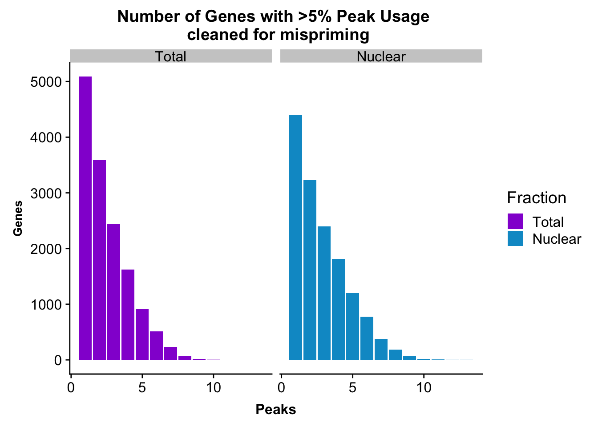
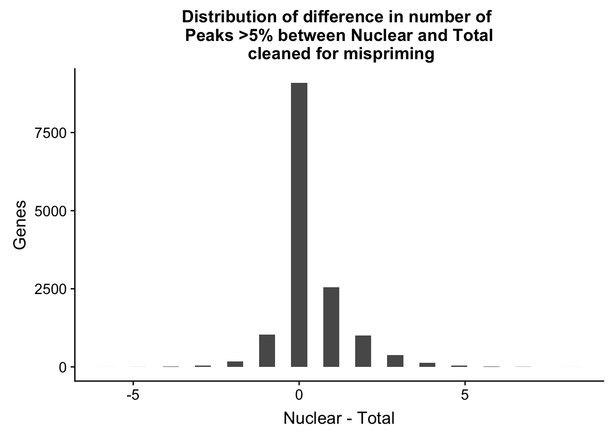
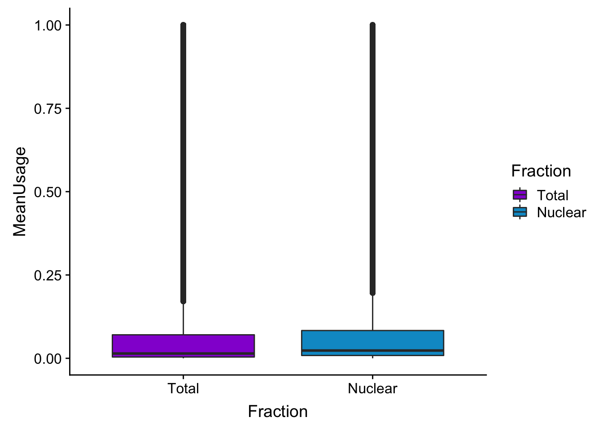
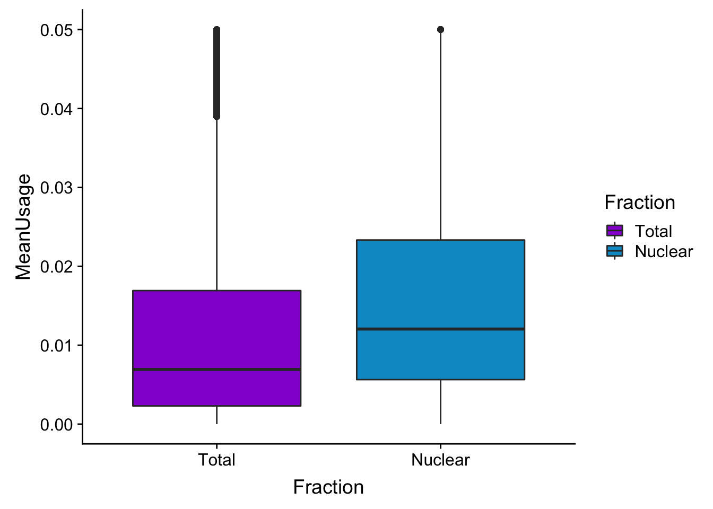
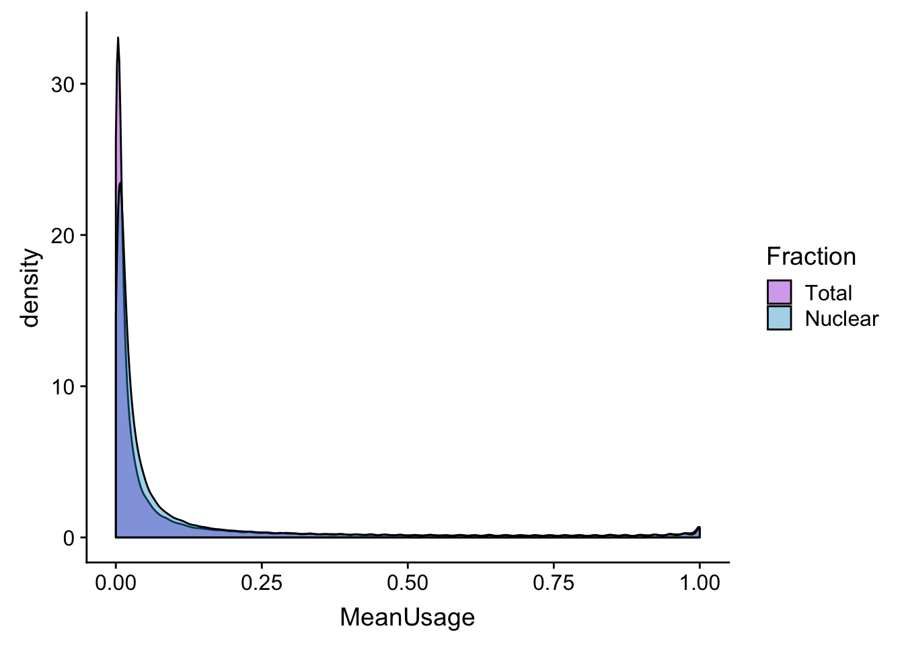
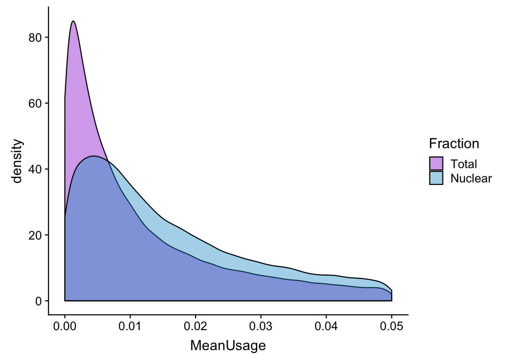
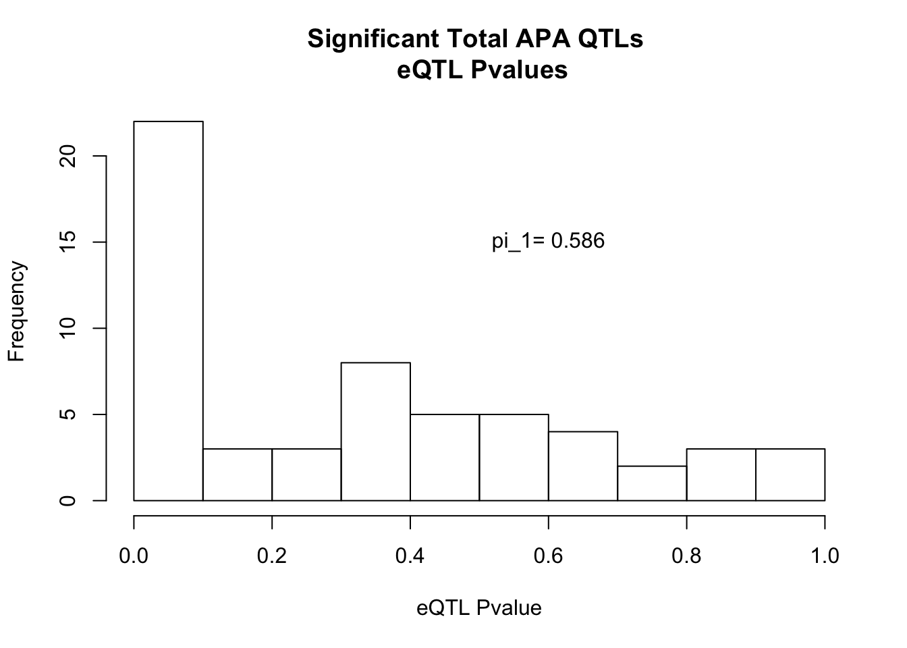

Last updated: 2019-01-19
workflowr checks: (Click a bullet for more information) ✔ R Markdown file: up-to-date
Great! Since the R Markdown file has been committed to the Git repository, you know the exact version of the code that produced these results.
✔ Environment: empty
Great job! The global environment was empty. Objects defined in the global environment can affect the analysis in your R Markdown file in unknown ways. For reproduciblity it’s best to always run the code in an empty environment.
✔ Seed:
set.seed(12345)
The command set.seed(12345) was run prior to running the code in the R Markdown file. Setting a seed ensures that any results that rely on randomness, e.g. subsampling or permutations, are reproducible.
✔ Session information: recorded
Great job! Recording the operating system, R version, and package versions is critical for reproducibility.
✔ Repository version: e62a187
wflow_publish or wflow_git_commit). workflowr only checks the R Markdown file, but you know if there are other scripts or data files that it depends on. Below is the status of the Git repository when the results were generated:
Ignored files:
Ignored: .DS_Store
Ignored: .Rhistory
Ignored: .Rproj.user/
Ignored: data/.DS_Store
Ignored: output/.DS_Store
Untracked files:
Untracked: KalistoAbundance18486.txt
Untracked: analysis/DirectionapaQTL.Rmd
Untracked: analysis/EvaleQTLs.Rmd
Untracked: analysis/PreAshExplore.Rmd
Untracked: analysis/YL_QTL_test.Rmd
Untracked: analysis/ncbiRefSeq_sm.sort.mRNA.bed
Untracked: analysis/snake.config.notes.Rmd
Untracked: analysis/verifyBAM.Rmd
Untracked: code/PeaksToCoverPerReads.py
Untracked: code/strober_pc_pve_heatmap_func.R
Untracked: data/18486.genecov.txt
Untracked: data/APApeaksYL.total.inbrain.bed
Untracked: data/ChromHmmOverlap/
Untracked: data/GM12878.chromHMM.bed
Untracked: data/GM12878.chromHMM.txt
Untracked: data/LianoglouLCL/
Untracked: data/LocusZoom/
Untracked: data/NuclearApaQTLs.txt
Untracked: data/PeakCounts/
Untracked: data/PeakUsage/
Untracked: data/PeakUsage_noMP/
Untracked: data/PeaksUsed/
Untracked: data/PeaksUsed_noMP_5percCov/
Untracked: data/RNAkalisto/
Untracked: data/TotalApaQTLs.txt
Untracked: data/Totalpeaks_filtered_clean.bed
Untracked: data/UnderstandPeaksQC/
Untracked: data/YL-SP-18486-T-combined-genecov.txt
Untracked: data/YL-SP-18486-T_S9_R1_001-genecov.txt
Untracked: data/YL_QTL_test/
Untracked: data/apaExamp/
Untracked: data/bedgraph_peaks/
Untracked: data/bin200.5.T.nuccov.bed
Untracked: data/bin200.Anuccov.bed
Untracked: data/bin200.nuccov.bed
Untracked: data/clean_peaks/
Untracked: data/comb_map_stats.csv
Untracked: data/comb_map_stats.xlsx
Untracked: data/comb_map_stats_39ind.csv
Untracked: data/combined_reads_mapped_three_prime_seq.csv
Untracked: data/diff_iso_trans/
Untracked: data/ensemble_to_genename.txt
Untracked: data/example_gene_peakQuant/
Untracked: data/explainProtVar/
Untracked: data/filtered_APApeaks_merged_allchrom_refseqTrans.closest2End.bed
Untracked: data/filtered_APApeaks_merged_allchrom_refseqTrans.closest2End.noties.bed
Untracked: data/first50lines_closest.txt
Untracked: data/gencov.test.csv
Untracked: data/gencov.test.txt
Untracked: data/gencov_zero.test.csv
Untracked: data/gencov_zero.test.txt
Untracked: data/gene_cov/
Untracked: data/joined
Untracked: data/leafcutter/
Untracked: data/merged_combined_YL-SP-threeprimeseq.bg
Untracked: data/molPheno_noMP/
Untracked: data/mol_overlap/
Untracked: data/mol_pheno/
Untracked: data/nom_QTL/
Untracked: data/nom_QTL_opp/
Untracked: data/nom_QTL_trans/
Untracked: data/nuc6up/
Untracked: data/nuc_10up/
Untracked: data/other_qtls/
Untracked: data/pQTL_otherphen/
Untracked: data/peakPerRefSeqGene/
Untracked: data/perm_QTL/
Untracked: data/perm_QTL_opp/
Untracked: data/perm_QTL_trans/
Untracked: data/perm_QTL_trans_filt/
Untracked: data/perm_QTL_trans_noMP_5percov/
Untracked: data/reads_mapped_three_prime_seq.csv
Untracked: data/smash.cov.results.bed
Untracked: data/smash.cov.results.csv
Untracked: data/smash.cov.results.txt
Untracked: data/smash_testregion/
Untracked: data/ssFC200.cov.bed
Untracked: data/temp.file1
Untracked: data/temp.file2
Untracked: data/temp.gencov.test.txt
Untracked: data/temp.gencov_zero.test.txt
Untracked: data/threePrimeSeqMetaData.csv
Untracked: output/picard/
Untracked: output/plots/
Untracked: output/qual.fig2.pdf
Unstaged changes:
Modified: analysis/28ind.peak.explore.Rmd
Modified: analysis/CompareLianoglouData.Rmd
Modified: analysis/apaQTLoverlapGWAS.Rmd
Modified: analysis/cleanupdtseq.internalpriming.Rmd
Modified: analysis/coloc_apaQTLs_protQTLs.Rmd
Modified: analysis/dif.iso.usage.leafcutter.Rmd
Modified: analysis/diff_iso_pipeline.Rmd
Modified: analysis/explainpQTLs.Rmd
Modified: analysis/explore.filters.Rmd
Modified: analysis/flash2mash.Rmd
Modified: analysis/mispriming_approach.Rmd
Modified: analysis/overlapMolQTL.Rmd
Modified: analysis/overlapMolQTL.opposite.Rmd
Modified: analysis/overlap_qtls.Rmd
Modified: analysis/peakOverlap_oppstrand.Rmd
Modified: analysis/peakQCPPlots.Rmd
Modified: analysis/pheno.leaf.comb.Rmd
Modified: analysis/swarmPlots_QTLs.Rmd
Modified: analysis/test.max2.Rmd
Modified: analysis/understandPeaks.Rmd
Modified: code/Snakefile
| File | Version | Author | Date | Message |
|---|---|---|---|---|
| Rmd | e62a187 | Briana Mittleman | 2019-01-19 | add overlap code |
| html | 89487c6 | Briana Mittleman | 2019-01-19 | Build site. |
| Rmd | f95fef9 | Briana Mittleman | 2019-01-19 | qtl code |
| html | 084d648 | Briana Mittleman | 2019-01-18 | Build site. |
| Rmd | 2ba9005 | Briana Mittleman | 2019-01-18 | over filter plot idea |
| html | e6936f3 | Briana Mittleman | 2019-01-18 | Build site. |
| Rmd | 762f5ae | Briana Mittleman | 2019-01-18 | filter plots |
| html | f7f514b | Briana Mittleman | 2019-01-18 | Build site. |
| Rmd | d1546dd | Briana Mittleman | 2019-01-18 | look at peaks after 5%filt |
| html | 92d2e15 | Briana Mittleman | 2019-01-17 | Build site. |
| Rmd | 1ec3c08 | Briana Mittleman | 2019-01-17 | fix subset bam script to a dictionary |
| html | ed31eba | Briana Mittleman | 2019-01-14 | Build site. |
| Rmd | c9ad11e | Briana Mittleman | 2019-01-14 | updatte filter R code |
| html | e088c55 | Briana Mittleman | 2019-01-14 | Build site. |
| Rmd | 6bc9243 | Briana Mittleman | 2019-01-14 | evaluate clean reads, make new file for misprime filter |
In the previous analysis I looked at a mispriming approach. Now I am going to use these filtered reads to create new BAM files, BW files, coverage files, and finally a peak list. After, I will evaluate the differences in the peak lists.
Now I need to filter the sorted bed files based on these clean reads.
I can make an R script that uses filter join:
Infile1 is the sorted bed, Infile2 is cleaned bed, Filter on read name
I can sue the number_T/N as the identifer.
##filter to reads without MP
filterSortBedbyCleanedBed.R
#!/bin/rscripts
# usage: Rscirpt --vanilla filterSortBedbyCleanedBed.R identifier
#this script takes in the sorted bed file and the clean reads, it will clean the bed file
library(dplyr)
library(tidyr)
library(data.table)
args = commandArgs(trailingOnly=TRUE)
identifier=args[1]
sortBedName= paste("/project2/gilad/briana/threeprimeseq/data/bed_sort/YL-SP-", identifier, "-combined-sort.bed", sep="")
CleanName= paste("/project2/gilad/briana/threeprimeseq/data/nuc_10up_CleanReads/TenBaseUP.", identifier, ".CleanReads.bed", sep="")
outFile= paste("/project2/gilad/briana/threeprimeseq/data/bed_sort_CleanedMP/YL-SP-", identifier, "-combined-sort.clean.bed", sep="")
bedFile=fread(sortBedName, col.names = c("Chrom", "start", "end", "name", "score", "strand"))
cleanFile=fread(CleanName, col.names = c("Chrom", "start", "end", "name", "score", "strand"))
intersection=bedFile %>% semi_join(cleanFile, by="name")
fwrite(intersection, file=outFile,quote = F, col.names = F, row.names = F, sep="\t")I need to call this in a bash script that gets just the identifier:
run_filterSortBedbyCleanedBed.sh
#!/bin/bash
#SBATCH --job-name=run_filterSortBedbyCleanedBed
#SBATCH --account=pi-yangili1
#SBATCH --time=8:00:00
#SBATCH --output=run_filterSortBedbyCleanedBed.out
#SBATCH --error=run_filterSortBedbyCleanedBed.err
#SBATCH --partition=broadwl
#SBATCH --mem=36G
#SBATCH --mail-type=END
module load Anaconda3
source activate three-prime-env
for i in $(ls /project2/gilad/briana/threeprimeseq/data/nuc_10up_CleanReads/*);do
describer=$(echo ${i} | sed -e 's/.*TenBaseUP.//' | sed -e "s/.CleanReads.bed//")
Rscript --vanilla filterSortBedbyCleanedBed.R ${describer}
done
SOrt the new bed files:
sort_filterSortBedbyCleanedBed.sh
#!/bin/bash
#SBATCH --job-name=sort_filterSortBedbyCleanedBed
#SBATCH --account=pi-yangili1
#SBATCH --time=8:00:00
#SBATCH --output=sort_filterSortBedbyCleanedBed.out
#SBATCH --error=sort_filterSortBedbyCleanedBed.err
#SBATCH --partition=broadwl
#SBATCH --mem=36G
#SBATCH --mail-type=END
module load Anaconda3
source activate three-prime-env
for i in $(ls /project2/gilad/briana/threeprimeseq/data/bed_sort_CleanedMP/*);do
describer=$(echo ${i} | sed -e 's/.*YL-SP-//' | sed -e "s/-combined-sort.clean.bed//")
bedtools sort -faidx /project2/gilad/briana/threeprimeseq/code/chromOrder.num.txt -i /project2/gilad/briana/threeprimeseq/data/bed_sort_CleanedMP/YL-SP-${describer}-combined-sort.clean.bed > /project2/gilad/briana/threeprimeseq/data/bed_sort_CleanedMP_sorted/YL-SP-${describer}-combined-sort.clean.sorted.bed
doneProblems with Order Try on one file to save time. sort with faidx order of bam then overlap describer=“18486-N”
check that i filtered with
NB501189:272:HGWL5BGX5:1:11109:9097:13183
samtools view -c -F 4 /project2/gilad/briana/threeprimeseq/data/sort/YL-SP-${describer}-combined-sort.bam 11405271
samtools view -c -F 4 /project2/gilad/briana/threeprimeseq/data/bam_NoMP/YL-SP-${describer}-combined-sort.noMP.bam
describer="18486-N"
bedtools sort -faidx /project2/gilad/briana/threeprimeseq/code/chromOrder.num.txt -i /project2/gilad/briana/threeprimeseq/data/bed_sort_CleanedMP/YL-SP-${describer}-combined-sort.clean.bed > /project2/gilad/briana/threeprimeseq/data/bed_sort_CleanedMP_sorted/YL-SP-${describer}-combined-sort.clean.sorted.bed
bedtools intersect -wa -sorted -s -abam /project2/gilad/briana/threeprimeseq/data/sort/YL-SP-${describer}-combined-sort.bam -b /project2/gilad/briana/threeprimeseq/data/bed_sort_CleanedMP_sorted/YL-SP-${describer}-combined-sort.clean.sorted.bed > /project2/gilad/briana/threeprimeseq/data/bam_NoMP/YL-SP-${describer}-combined-sort.noMP.bam
Next I can use bedtools intersect to filter the bam files from these bed files. I will write the code then wrap it.
filterOnlyOKPrimeFromBam.sh
a is the bam, b is the clean bed , stranded, sorted, -wa
#!/bin/bash
#SBATCH --job-name=filterOnlyOKPrimeFromBam
#SBATCH --account=pi-yangili1
#SBATCH --time=36:00:00
#SBATCH --output=filterOnlyOKPrimeFromBam.out
#SBATCH --error=filterOnlyOKPrimeFromBam.err
#SBATCH --partition=broadwl
#SBATCH --mem=50G
#SBATCH --mail-type=END
module load Anaconda3
source activate three-prime-env
describer=$1
bedtools intersect -wa -sorted -s -abam /project2/gilad/briana/threeprimeseq/data/sort/YL-SP-${describer}-combined-sort.bam -b /project2/gilad/briana/threeprimeseq/data/bed_sort_CleanedMP_sorted/YL-SP-${describer}-combined-sort.clean.sorted.bed > /project2/gilad/briana/threeprimeseq/data/bam_NoMP/YL-SP-${desrciber}-combined-sort.noMP.bam
This is slow! I want to try to use pysam to do this. I need to make a list of the ok reads from the bed file then filter on these as I read the bam file.
Add pysam to my environement
filterBamforMP.pysam2.py
#!/usr/bin/env python
"""
Usage: python filterBamforMP.pysam2.py <describer>
"""
def main(Bin, Bamin, out):
okRead={}
for ln in open(Bin, "r"):
chrom, start_new , end_new , name, score, strand = ln.split()
okRead[name] = ""
#pysam to read in bam allignments
bamfile = pysam.AlignmentFile(Bamin, "rb")
finalBam = pysam.AlignmentFile(out, "wb", template=bamfile)
#read name is the first col in each bam file
n=0
for read in bamfile.fetch():
read_name=read.query_name
#if statement about name
if read_name in okRead.keys():
finalBam.write(read)
if n % 1000 == 0 : print(n)
n+=1
bamfile.close()
finalBam.close()
if __name__ == "__main__":
import sys, pysam
describer = sys.argv[1]
inBed= "/project2/gilad/briana/threeprimeseq/data/bed_sort_CleanedMP_sorted/YL-SP-" + describer + "-combined-sort.clean.sorted.bed"
inBam="/project2/gilad/briana/threeprimeseq/data/sort/YL-SP-" + describer + "-combined-sort.bam"
outBam="/project2/gilad/briana/threeprimeseq/data/bam_NoMP/YL-SP-" + describer + "-combined-sort.noMP.bam"
main(inBed, inBam, outBam)run_filterBamforMP.pysam2.sh
#!/bin/bash
#SBATCH --job-name=dic_test_filterBamforMP.pysam2
#SBATCH --account=pi-yangili1
#SBATCH --time=36:00:00
#SBATCH --output=run_filterBamforMP.pysam2.out
#SBATCH --error=run_filterBamforMP.pysam2.err
#SBATCH --partition=broadwl
#SBATCH --mem=32G
#SBATCH --mail-type=END
module load Anaconda3
source activate three-prime-env
describer=$1
python filterBamforMP.pysam2.py ${describer}
wrap_filterBamforMP.pysam2.sh
#!/bin/bash
#SBATCH --job-name=wrap_filterBamforMP.pysam2
#SBATCH --account=pi-yangili1
#SBATCH --time=36:00:00
#SBATCH --output=wrap_filterBamforMP.pysam2.out
#SBATCH --error=wrap_filterBamforMP.pysam2.err
#SBATCH --partition=broadwl
#SBATCH --mem=32G
#SBATCH --mail-type=END
module load Anaconda3
source activate three-prime-env
for i in $(ls /project2/gilad/briana/threeprimeseq/data/bed_sort_CleanedMP_sorted/*);do
describer=$(echo ${i} | sed -e 's/.*YL-SP-//' | sed -e "s/-combined-sort.clean.sorted.bed//")
sbatch run_filterBamforMP.pysam2.sh ${describer}
done
Sort and index bam files:
SortIndexBam_noMP.sh
#!/bin/bash
#SBATCH --job-name=SortIndexBam_noMP
#SBATCH --account=pi-yangili1
#SBATCH --time=8:00:00
#SBATCH --output=SortIndexBam_noMP.out
#SBATCH --error=SortIndexBam_noMP.err
#SBATCH --partition=bigmem2
#SBATCH --mem=100G
#SBATCH --mail-type=END
module load samtools
#source activate three-prime-env
for i in $(ls /project2/gilad/briana/threeprimeseq/data/bam_NoMP/*);do
describer=$(echo ${i} | sed -e 's/.*YL-SP-//' | sed -e "s/-combined-sort.noMP.bam//")
samtools sort /project2/gilad/briana/threeprimeseq/data/bam_NoMP/YL-SP-${describer}-combined-sort.noMP.bam > /project2/gilad/briana/threeprimeseq/data/bam_NoMP_sort/YL-SP-${describer}-combined-sort.noMP.sort.bam
samtools index /project2/gilad/briana/threeprimeseq/data/bam_NoMP_sort/YL-SP-${describer}-combined-sort.noMP.sort.bam
done Merge bams:
I will merge all of the bam files to vreate the BW and coverage files
mergeBamFiles_noMP.sh
#!/bin/bash
#SBATCH --job-name=mergeBamFiles_noMP
#SBATCH --account=pi-yangili1
#SBATCH --time=8:00:00
#SBATCH --output=mergeBamFiles_noMP.out
#SBATCH --error=mergeBamFiles_noMP.err
#SBATCH --partition=bigmem2
#SBATCH --mem=100G
#SBATCH --mail-type=END
module load Anaconda3
source activate three-prime-env
samtools merge /project2/gilad/briana/threeprimeseq/data/mergedBams_NoMP/AllSamples.MergedBamFiles.noMP.bam /project2/gilad/briana/threeprimeseq/data/bam_NoMP_sort/*.bam
SortIndexMergedBam_noMP.sh
#!/bin/bash
#SBATCH --job-name=SortIndexMergedBam_noMP
#SBATCH --account=pi-yangili1
#SBATCH --time=8:00:00
#SBATCH --output=SortIndexMergedBam_noMP.out
#SBATCH --error=SortIndexMergedBam_noMP.err
#SBATCH --partition=bigmem2
#SBATCH --mem=100G
#SBATCH --mail-type=END
module load Anaconda3
source activate three-prime-env
samtools sort /project2/gilad/briana/threeprimeseq/data/mergedBams_NoMP/AllSamples.MergedBamFiles.noMP.bam > /project2/gilad/briana/threeprimeseq/data/mergedBams_NoMP/AllSamples.MergedBamFiles.noMP.sort.bam
samtools index /project2/gilad/briana/threeprimeseq/data/mergedBams_NoMP/AllSamples.MergedBamFiles.noMP.sort.bamCreate bigwig and coverage files from the merged bam
mergedBam2Bedgraph.sh
#!/bin/bash
#SBATCH --job-name=mergedBam2Bedgraph
#SBATCH --account=pi-yangili1
#SBATCH --time=8:00:00
#SBATCH --output=mergedBam2Bedgraph.out
#SBATCH --error=mergedBam2Bedgraph.err
#SBATCH --partition=bigmem2
#SBATCH --mem=100G
#SBATCH --mail-type=END
module load Anaconda3
source activate three-prime-env
bedtools genomecov -ibam /project2/gilad/briana/threeprimeseq/data/mergedBams_NoMP/AllSamples.MergedBamFiles.noMP.sort.bam -bg -split > /project2/gilad/briana/threeprimeseq/data/mergeBG_noMP/AllSamples.MergedBamFiles.noMP.sort.bg
Use my bg_to_cov.py script. This script takes the infile and output file
run_bgtocov_noMP.sh
#!/bin/bash
#SBATCH --job-name=run_bgtocov_noMP
#SBATCH --account=pi-yangili1
#SBATCH --time=24:00:00
#SBATCH --output=run_bgtocov_noMP.out
#SBATCH --error=run_bgtocov_noMP.err
#SBATCH --partition=bigmem2
#SBATCH --mem=100G
#SBATCH --mail-type=END
module load Anaconda3
source activate three-prime-env
python bg_to_cov.py "/project2/gilad/briana/threeprimeseq/data/mergeBG_noMP/AllSamples.MergedBamFiles.noMP.sort.bg" "/project2/gilad/briana/threeprimeseq/data/mergeBG_coverage_noMP/AllSamples.MergedBamFiles.noMP.sort.coverage.txt"
sort -k1,1 -k2,2n /project2/gilad/briana/threeprimeseq/data/mergeBG_coverage_noMP/AllSamples.MergedBamFiles.noMP.sort.coverage.txt > /project2/gilad/briana/threeprimeseq/data/mergeBG_coverage_noMP/AllSamples.MergedBamFiles.noMP.sort.coverage.sort.txtTHen I will be able to call peaks
callPeaksYL_noMP.py
def main(inFile, outFile, ctarget):
fout = open(outFile,'w')
mincount = 10
ov = 20
current_peak = []
currentChrom = None
prevPos = 0
for ln in open(inFile):
chrom, pos, count = ln.split()
if chrom != ctarget: continue
count = float(count)
if currentChrom == None:
currentChrom = chrom
if count == 0 or currentChrom != chrom or int(pos) > prevPos + 1:
if len(current_peak) > 0:
print (current_peak)
M = max([x[1] for x in current_peak])
if M > mincount:
all_peaks = refine_peak(current_peak, M, M*0.1,M*0.05)
#refined_peaks = [(x[0][0],x[-1][0], np.mean([y[1] for y in x])) for x in all_peaks]
rpeaks = [(int(x[0][0])-ov,int(x[-1][0])+ov, np.mean([y[1] for y in x])) for x in all_peaks]
if len(rpeaks) > 1:
for clu in cluster_intervals(rpeaks)[0]:
M = max([x[2] for x in clu])
merging = []
for x in clu:
if x[2] > M *0.5:
#print x, M
merging.append(x)
c, s,e,mean = chrom, min([x[0] for x in merging])+ov, max([x[1] for x in merging])-ov, np.mean([x[2] for x in merging])
#print c,s,e,mean
fout.write("chr%s\t%d\t%d\t%d\t+\t.\n"%(c,s,e,mean))
fout.flush()
elif len(rpeaks) == 1:
s,e,mean = rpeaks[0]
fout.write("chr%s\t%d\t%d\t%f\t+\t.\n"%(chrom,s+ov,e-ov,mean))
print("chr%s"%chrom+"\t%d\t%d\t%f\t+\t.\n"%rpeaks[0])
#print refined_peaks
current_peak = [(pos,count)]
else:
current_peak.append((pos,count))
currentChrom = chrom
prevPos = int(pos)
def refine_peak(current_peak, M, thresh, noise, minpeaksize=30):
cpeak = []
opeak = []
allcpeaks = []
allopeaks = []
for pos, count in current_peak:
if count > thresh:
cpeak.append((pos,count))
opeak = []
continue
elif count > noise:
opeak.append((pos,count))
else:
if len(opeak) > minpeaksize:
allopeaks.append(opeak)
opeak = []
if len(cpeak) > minpeaksize:
allcpeaks.append(cpeak)
cpeak = []
if len(cpeak) > minpeaksize:
allcpeaks.append(cpeak)
if len(opeak) > minpeaksize:
allopeaks.append(opeak)
allpeaks = allcpeaks
for opeak in allopeaks:
M = max([x[1] for x in opeak])
allpeaks += refine_peak(opeak, M, M*0.3, noise)
#print [(x[0],x[-1]) for x in allcpeaks], [(x[0],x[-1]) for x in allopeaks], [(x[0],x[-1]) for x in allpeaks]
#print '---\n'
return(allpeaks)
if __name__ == "__main__":
import numpy as np
from misc_helper import *
import sys
chrom = sys.argv[1]
inFile = "/project2/gilad/briana/threeprimeseq/data/mergeBG_coverage_noMP/AllSamples.MergedBamFiles.noMP.sort.coverage.sort.txt"
outFile = "/project2/gilad/briana/threeprimeseq/data/mergedPeaks_noMP/APApeaks_noMP_chr%s.bed"%chrom
main(inFile, outFile, chrom)Run this over all chroms:
run_callPeaksYL_noMP.sh
#!/bin/bash
#SBATCH --job-name=run_callPeaksYL_noMP
#SBATCH --account=pi-yangili1
#SBATCH --time=24:00:00
#SBATCH --output=run_callPeaksYL_noMP.out
#SBATCH --error=run_callPeaksYL_noMP.err
#SBATCH --partition=broadwl
#SBATCH --mem=12G
#SBATCH --mail-type=END
module load Anaconda3
source activate three-prime-env
for i in $(seq 1 22); do
python callPeaksYL_noMP.py $i
doneFilter peaks:
cat /project2/gilad/briana/threeprimeseq/data/mergedPeaks_noMP/*.bed > /project2/gilad/briana/threeprimeseq/data/mergedPeaks_noMP/APApeaks_merged_allchrom_noMP.bedbed2saf_noMP.py
fout = open("/project2/gilad/briana/threeprimeseq/data/mergedPeaks_noMP/APApeaks_merged_allchrom_noMP.SAF",'w')
fout.write("GeneID\tChr\tStart\tEnd\tStrand\n")
for ln in open("/project2/gilad/briana/threeprimeseq/data/mergedPeaks_noMP/APApeaks_merged_allchrom_noMP.bed"):
chrom, start, end, score, strand, score2 = ln.split()
ID = "peak_%s_%s_%s"%(chrom,start, end)
fout.write("%s\t%s\t%s\t%s\t+\n"%(ID+"_+", chrom.replace("chr",""), start, end))
fout.write("%s\t%s\t%s\t%s\t-\n"%(ID+"_-", chrom.replace("chr",""), start, end))
fout.close()peak_fc_noMP.sh
#!/bin/bash
#SBATCH --job-name=peak_fc_noMP
#SBATCH --account=pi-yangili1
#SBATCH --time=24:00:00
#SBATCH --output=peak_fc_noMP.out
#SBATCH --error=peak_fc_npMP.err
#SBATCH --partition=broadwl
#SBATCH --mem=12G
#SBATCH --mail-type=END
module load Anaconda3
source activate three-prime-env
featureCounts -a /project2/gilad/briana/threeprimeseq/data/mergedPeaks_noMP/APApeaks_merged_allchrom_noMP.SAF -F SAF -o /project2/gilad/briana/threeprimeseq/data/mergedPeaks_comb_noMP/APAquant_noMP.fc /project2/gilad/briana/threeprimeseq/data/bam_NoMP_sort/*sort.bam -s 1filter_peaks_noMP.py
from misc_helper import *
import numpy as np
fout = file("/project2/gilad/briana/threeprimeseq/data/mergedPeaks_noMP_filtered/Filtered_APApeaks_merged_allchrom_noMP.bed",'w')
#cutoffs
c = 0.9
caveread = 2
# counters
fc, fcaveread = 0, 0
N, Npass = 0, 0
for dic in stream_table(open("/project2/gilad/briana/threeprimeseq/data/mergedPeaks_comb_noMP/APAquant_noMP.fc"),'\t'):
tot, nuc = [], []
for k in dic:
if "YL-SP" not in k: continue
T = k.split("-")[-3].split("_")[0]
if T == "T":
tot.append(int(dic[k]))
else:
nuc.append(int(dic[k]))
totP = tot.count(0)/float(len(tot))
nucP = nuc.count(0)/float(len(nuc))
N += 1
if totP > c and nucP > c:
fc += 1
continue
if max([np.mean(tot),np.mean(nuc)]) <= caveread:
fcaveread += 1
continue
fout.write("\t".join(["chr"+dic['Chr'], dic["Start"], dic["End"],str(max([np.mean(tot),np.mean(nuc)])),dic["Strand"],"."])+'\n')
Npass += 1
fout.close()
print("%d (%.2f%%) did not pass proportion of nonzero cutoff, %d (%.2f%%) did not pass average read cutoff. Total peaks: %d (%.3f%%) of %d peaks remaining"%(fc,float(fc)/N*100, fcaveread, float(fcaveread)/N*100, Npass, 100*Npass/float(N),N))run_filter_peaks_noMP.sh
#!/bin/bash
#SBATCH --job-name=filter_peak
#SBATCH --account=pi-yangili1
#SBATCH --time=24:00:00
#SBATCH --output=filet_peak.out
#SBATCH --error=filter_peak.err
#SBATCH --partition=broadwl
#SBATCH --mem=12G
#SBATCH --mail-type=END
module load python
python filter_peaks_noMP.pyName the peaks:
122488 = wc -l /project2/gilad/briana/threeprimeseq/data/mergedPeaks_noMP_filtered/Filtered_APApeaks_merged_allchrom_noMP.bed
seq 1 122488 > peak.num.txt
sort -k1,1 -k2,2n Filtered_APApeaks_merged_allchrom_noMP.bed > Filtered_APApeaks_merged_allchrom_noMP.sort.bed
paste /project2/gilad/briana/threeprimeseq/data/mergedPeaks_noMP_filtered/Filtered_APApeaks_merged_allchrom_noMP.sort.bed peak.num.txt | column -s $'\t' -t > temp
awk '{print $1 "\t" $2 "\t" $3 "\t" $7 "\t" $4 "\t" $5 "\t" $6}' temp > /project2/gilad/briana/threeprimeseq/data/mergedPeaks_noMP_filtered/Filtered_APApeaks_merged_allchrom_noMP.sort.named.bed
#cut the chr
sed 's/^chr//' /project2/gilad/briana/threeprimeseq/data/mergedPeaks_noMP_filtered/Filtered_APApeaks_merged_allchrom_noMP.sort.named.bed > /project2/gilad/briana/threeprimeseq/data/mergedPeaks_noMP_filtered/Filtered_APApeaks_merged_allchrom_noMP.sort.named.noCHR.bedassign peaks to genes:
TransClosest2End_noMP.sh
#!/bin/bash
#SBATCH --job-name=TransClosest2End_noMP
#SBATCH --account=pi-yangili1
#SBATCH --time=24:00:00
#SBATCH --output=TransClosest2End_noMP.out
#SBATCH --error=TransClosest2End_noMP.err
#SBATCH --partition=broadwl
#SBATCH --mem=12G
#SBATCH --mail-type=END
module load Anaconda3
source activate three-prime-env
bedtools closest -S -D b -t "first" -a /project2/gilad/briana/threeprimeseq/data/mergedPeaks_noMP_filtered/Filtered_APApeaks_merged_allchrom_noMP.sort.named.noCHR.bed -b /project2/gilad/briana/genome_anotation_data/ncbiRefSeq_endProtCodGenes_sort.txt > /project2/gilad/briana/threeprimeseq/data/mergedPeaks_noMP_filtered/Filtered_APApeaks_merged_allchrom_noMP.sort.named.noCHR.refseqTrans.closest2end.bed
/project2/gilad/briana/threeprimeseq/data/mergedPeaks_noMP_filtered/Filtered_APApeaks_merged_allchrom_noMP.sort.named.noCHR.refseqTrans.closest2end.bed
awk '{print $1 "\t" $2 "\t" $3 "\t" $4 "\t" $5 "\t" $13 "\t" $11}' /project2/gilad/briana/threeprimeseq/data/mergedPeaks_noMP_filtered/Filtered_APApeaks_merged_allchrom_noMP.sort.named.noCHR.refseqTrans.closest2end.bed > /project2/gilad/briana/threeprimeseq/data/mergedPeaks_noMP_filtered/Filtered_APApeaks_merged_allchrom_noMP.sort.named.noCHR.refseqTrans.closest2end.sm.bed
less /project2/gilad/briana/threeprimeseq/data/mergedPeaks_noMP_filtered/Filtered_APApeaks_merged_allchrom_noMP.sort.named.noCHR.refseqTrans.closest2end.sm.bed | tr ":" "-" > /project2/gilad/briana/threeprimeseq/data/mergedPeaks_noMP_filtered/Filtered_APApeaks_merged_allchrom_noMP.sort.named.noCHR.refseqTrans.closest2end.sm.fixed.bedbed2saf_peaks2trans.noMP.py
from misc_helper import *
fout = open("/project2/gilad/briana/threeprimeseq/data/mergedPeaks_noMP_filtered/Filtered_APApeaks_merged_allchrom_noMP.sort.named.noCHR.refseqTrans.closest2end.sm.fixed.SAF",'w')
fout.write("GeneID\tChr\tStart\tEnd\tStrand\n")
for ln in open("/project2/gilad/briana/threeprimeseq/data/mergedPeaks_noMP_filtered/Filtered_APApeaks_merged_allchrom_noMP.sort.named.noCHR.refseqTrans.closest2end.sm.fixed.bed"):
chrom, start, end, name, score, strand, gene = ln.split()
name_i=int(name)
start_i=int(start)
end_i=int(end)
gene_only=gene.split("-")[1]
ID = "peak%d:%s:%d:%d:%s:%s"%(name_i, chrom, start_i, end_i, strand, gene_only)
fout.write("%s\t%s\t%d\t%d\t%s\n"%(ID, chrom, start_i, end_i, strand))
fout.close()ref_gene_peakTranscript_fc_TN_noMP.sh
#!/bin/bash
#SBATCH --job-name=ref_gene_peakTranscript_fc_TN_noMP
#SBATCH --account=pi-yangili1
#SBATCH --time=24:00:00
#SBATCH --output=ref_gene_peakTranscript_fc_TN_noMP.out
#SBATCH --error=ref_gene_peakTranscript_fc_TN_noMP.err
#SBATCH --partition=broadwl
#SBATCH --mem=12G
#SBATCH --mail-type=END
module load Anaconda3
source activate three-prime-env
featureCounts -O -a /project2/gilad/briana/threeprimeseq/data/mergedPeaks_noMP_filtered/Filtered_APApeaks_merged_allchrom_noMP.sort.named.noCHR.refseqTrans.closest2end.sm.fixed.SAF -F SAF -o /project2/gilad/briana/threeprimeseq/data/filtPeakOppstrand_cov_noMP/filtered_APApeaks_merged_allchrom_refseqGenes.TranscriptNoMP_sm_quant.Total.fc /project2/gilad/briana/threeprimeseq/data/bam_NoMP_sort/*T-combined-sort.noMP.sort.bam -s 2
featureCounts -O -a /project2/gilad/briana/threeprimeseq/data/mergedPeaks_noMP_filtered/Filtered_APApeaks_merged_allchrom_noMP.sort.named.noCHR.refseqTrans.closest2end.sm.fixed.SAF -F SAF -o /project2/gilad/briana/threeprimeseq/data/filtPeakOppstrand_cov_noMP/filtered_APApeaks_merged_allchrom_refseqGenes.TranscriptNoMP_sm_quant.Nuclear.fc /project2/gilad/briana/threeprimeseq/data/bam_NoMP_sort/*N-combined-sort.noMP.sort.bam -s 2
fix_head_fc_opp_transcript_tot_noMP.py
infile= open("/project2/gilad/briana/threeprimeseq/data/filtPeakOppstrand_cov_noMP/filtered_APApeaks_merged_allchrom_refseqGenes.TranscriptNoMP_sm_quant.Total.fc", "r")
fout = open("/project2/gilad/briana/threeprimeseq/data/filtPeakOppstrand_cov_noMP/filtered_APApeaks_merged_allchrom_refseqGenes.TranscriptNoMP_sm_quant.Total_fixed.fc",'w')
for line, i in enumerate(infile):
if line == 1:
i_list=i.split()
libraries=i_list[:6]
for sample in i_list[6:]:
full = sample.split("/")[7]
samp= full.split("-")[2:4]
lim="_"
samp_st=lim.join(samp)
libraries.append(samp_st)
first_line= "\t".join(libraries)
fout.write(first_line + '\n')
else :
fout.write(i)
fout.close()fix_head_fc_opp_transcript_nuc_noMP.py
infile= open("/project2/gilad/briana/threeprimeseq/data/filtPeakOppstrand_cov_noMP/filtered_APApeaks_merged_allchrom_refseqGenes.TranscriptNoMP_sm_quant.Nuclear.fc", "r")
fout = open("/project2/gilad/briana/threeprimeseq/data/filtPeakOppstrand_cov_noMP/filtered_APApeaks_merged_allchrom_refseqGenes.TranscriptNoMP_sm_quant.Nuclear_fixed.fc",'w')
for line, i in enumerate(infile):
if line == 1:
i_list=i.split()
libraries=i_list[:6]
for sample in i_list[6:]:
full = sample.split("/")[7]
samp= full.split("-")[2:4]
lim="_"
samp_st=lim.join(samp)
libraries.append(samp_st)
first_line= "\t".join(libraries)
fout.write(first_line + '\n')
else :
fout.write(i)
fout.close()create_fileid_opp_transcript_total_noMP.py
fout = open("/project2/gilad/briana/threeprimeseq/data/filtPeakOppstrand_cov_noMP/file_id_mapping_total_Transcript_head.txt",'w')
infile= open("/project2/gilad/briana/threeprimeseq/data/filtPeakOppstrand_cov_noMP/filtered_APApeaks_merged_allchrom_refseqGenes.TranscriptNoMP_sm_quant.Total_fixed.fc", "r")
for line, i in enumerate(infile):
if line == 0:
i_list=i.split()
files= i_list[10:-2]
for each in files:
full = each.split("/")[7]
samp= full.split("-")[2:4]
lim="_"
samp_st=lim.join(samp)
outLine= full[:-1] + "\t" + samp_st
fout.write(outLine + "\n")
fout.close()create_fileid_opp_transcript_nuclear_noMP.py
fout = open("/project2/gilad/briana/threeprimeseq/data/filtPeakOppstrand_cov_noMP/file_id_mapping_nuclear_Transcript_head.txt",'w')
infile= open("/project2/gilad/briana/threeprimeseq/data/filtPeakOppstrand_cov_noMP/filtered_APApeaks_merged_allchrom_refseqGenes.TranscriptNoMP_sm_quant.Nuclear_fixed.fc", "r")
for line, i in enumerate(infile):
if line == 0:
i_list=i.split()
files= i_list[10:-2]
for each in files:
full = each.split("/")[7]
samp= full.split("-")[2:4]
lim="_"
samp_st=lim.join(samp)
outLine= full[:-1] + "\t" + samp_st
fout.write(outLine + "\n")
fout.close()remove the extra top lines from these files:
awk '{if (NR!=1) {print}}' /project2/gilad/briana/threeprimeseq/data/filtPeakOppstrand_cov_noMP/file_id_mapping_nuclear_Transcript_head.txt > /project2/gilad/briana/threeprimeseq/data/filtPeakOppstrand_cov_noMP/file_id_mapping_nuclear_Transcript.txt
awk '{if (NR!=1) {print}}' /project2/gilad/briana/threeprimeseq/data/filtPeakOppstrand_cov_noMP/file_id_mapping_total_Transcript_head.txt > /project2/gilad/briana/threeprimeseq/data/filtPeakOppstrand_cov_noMP/file_id_mapping_total_Transcript.txtmakePhenoRefSeqPeaks_Transcript_Total_noMP.py
#PYTHON 3
dic_IND = {}
dic_BAM = {}
for ln in open("/project2/gilad/briana/threeprimeseq/data/filtPeakOppstrand_cov_noMP/file_id_mapping_total_Transcript.txt"):
bam, IND = ln.split("\t")
IND = IND.strip()
dic_IND[bam] = IND
if IND not in dic_BAM:
dic_BAM[IND] = []
dic_BAM[IND].append(bam)
#now I have ind dic with keys as the bam and ind as the values
#I also have a bam dic with ind as the keys and bam as the values
inds=list(dic_BAM.keys()) #list of ind libraries
#gene start and end dictionaries:
dic_geneS = {}
dic_geneE = {}
for ln in open("/project2/gilad/briana/genome_anotation_data/ncbiRefSeq_endProtCodGenes_sort.txt"):
chrom, start, end, geneID, score, strand = ln.split('\t')
gene= geneID.split(":")[1]
if "-" in gene:
gene=gene.split("-")[0]
if gene not in dic_geneS:
dic_geneS[gene]=int(start)
dic_geneE[gene]=int(end)
#list of genes
count_file=open("/project2/gilad/briana/threeprimeseq/data/filtPeakOppstrand_cov_noMP/filtered_APApeaks_merged_allchrom_refseqGenes.TranscriptNoMP_sm_quant.Total_fixed.fc", "r")
genes=[]
for line , i in enumerate(count_file):
if line > 1:
i_list=i.split()
id=i_list[0]
id_list=id.split(":")
gene=id_list[5]
if gene not in genes:
genes.append(gene)
#make the ind and gene dic
dic_dub={}
for g in genes:
dic_dub[g]={}
for i in inds:
dic_dub[g][i]=0
#populate the dictionary
count_file=open("/project2/gilad/briana/threeprimeseq/data/filtPeakOppstrand_cov_noMP/filtered_APApeaks_merged_allchrom_refseqGenes.TranscriptNoMP_sm_quant.Total_fixed.fc", "r")
for line, i in enumerate(count_file):
if line > 1:
i_list=i.split()
id=i_list[0]
id_list=id.split(":")
g= id_list[5]
values=list(i_list[6:])
list_list=[]
for ind,val in zip(inds, values):
list_list.append([ind, val])
for num, name in enumerate(list_list):
dic_dub[g][list_list[num][0]] += int(list_list[num][1])
#write the file by acessing the dictionary and putting values in the table ver the value in the dic
fout=open("/project2/gilad/briana/threeprimeseq/data/phenotypes_filtPeakTranscript_noMP/filtered_APApeaks_merged_allchrom_refseqGenes.TranscriptNoMP_sm_quant.Total_fixed.pheno.fc","w")
peak=["chrom"]
inds_noL=[]
for each in inds:
indsNA= "NA" + each[:-2]
inds_noL.append(indsNA)
fout.write(" ".join(peak + inds_noL) + '\n' )
count_file=open("/project2/gilad/briana/threeprimeseq/data/filtPeakOppstrand_cov_noMP/filtered_APApeaks_merged_allchrom_refseqGenes.TranscriptNoMP_sm_quant.Total_fixed.fc", "r")
for line , i in enumerate(count_file):
if line > 1:
i_list=i.split()
id=i_list[0]
id_list=id.split(":")
gene=id_list[5]
start=dic_geneS[id_list[5]]
end=dic_geneE[id_list[5]]
buff=[]
buff.append("chr%s:%d:%d:%s_%s_%s"%(id_list[1], start, end, id_list[5], id_list[4], id_list[0]))
for x,y in zip(i_list[6:], inds):
b=int(dic_dub[gene][y])
t=int(x)
buff.append("%d/%d"%(t,b))
fout.write(" ".join(buff)+ '\n')
fout.close()
makePhenoRefSeqPeaks_Transcript_Nuclear_noMP.py
#PYTHON 3
dic_IND = {}
dic_BAM = {}
for ln in open("/project2/gilad/briana/threeprimeseq/data/filtPeakOppstrand_cov_noMP/file_id_mapping_nuclear_Transcript.txt"):
bam, IND = ln.split("\t")
IND = IND.strip()
dic_IND[bam] = IND
if IND not in dic_BAM:
dic_BAM[IND] = []
dic_BAM[IND].append(bam)
#now I have ind dic with keys as the bam and ind as the values
#I also have a bam dic with ind as the keys and bam as the values
inds=list(dic_BAM.keys()) #list of ind libraries
#gene start and end dictionaries:
dic_geneS = {}
dic_geneE = {}
for ln in open("/project2/gilad/briana/genome_anotation_data/ncbiRefSeq_endProtCodGenes_sort.txt"):
chrom, start, end, geneID, score, strand = ln.split('\t')
gene= geneID.split(":")[1]
if "-" in gene:
gene=gene.split("-")[0]
if gene not in dic_geneS:
dic_geneS[gene]=int(start)
dic_geneE[gene]=int(end)
#list of genes
count_file=open("/project2/gilad/briana/threeprimeseq/data/filtPeakOppstrand_cov_noMP/filtered_APApeaks_merged_allchrom_refseqGenes.TranscriptNoMP_sm_quant.Nuclear_fixed.fc", "r")
genes=[]
for line , i in enumerate(count_file):
if line > 1:
i_list=i.split()
id=i_list[0]
id_list=id.split(":")
gene=id_list[5]
if gene not in genes:
genes.append(gene)
#make the ind and gene dic
dic_dub={}
for g in genes:
dic_dub[g]={}
for i in inds:
dic_dub[g][i]=0
#populate the dictionary
count_file=open("/project2/gilad/briana/threeprimeseq/data/filtPeakOppstrand_cov_noMP/filtered_APApeaks_merged_allchrom_refseqGenes.TranscriptNoMP_sm_quant.Nuclear_fixed.fc", "r")
for line, i in enumerate(count_file):
if line > 1:
i_list=i.split()
id=i_list[0]
id_list=id.split(":")
g= id_list[5]
values=list(i_list[6:])
list_list=[]
for ind,val in zip(inds, values):
list_list.append([ind, val])
for num, name in enumerate(list_list):
dic_dub[g][list_list[num][0]] += int(list_list[num][1])
#write the file by acessing the dictionary and putting values in the table ver the value in the dic
fout=open("/project2/gilad/briana/threeprimeseq/data/phenotypes_filtPeakTranscript_noMP/filtered_APApeaks_merged_allchrom_refseqGenes.TranscriptNoMP_sm_quant.Nuclear_fixed.pheno.fc","w")
peak=["chrom"]
inds_noL=[]
for each in inds:
indsNA= "NA" + each[:-2]
inds_noL.append(indsNA)
fout.write(" ".join(peak + inds_noL) + '\n' )
count_file=open("/project2/gilad/briana/threeprimeseq/data/filtPeakOppstrand_cov_noMP/filtered_APApeaks_merged_allchrom_refseqGenes.TranscriptNoMP_sm_quant.Nuclear_fixed.fc", "r")
for line , i in enumerate(count_file):
if line > 1:
i_list=i.split()
id=i_list[0]
id_list=id.split(":")
gene=id_list[5]
start=dic_geneS[id_list[5]]
end=dic_geneE[id_list[5]]
buff=[]
buff.append("chr%s:%d:%d:%s_%s_%s"%(id_list[1], start, end, id_list[5], id_list[4], id_list[0]))
for x,y in zip(i_list[6:], inds):
b=int(dic_dub[gene][y])
t=int(x)
buff.append("%d/%d"%(t,b))
fout.write(" ".join(buff)+ '\n')
fout.close()
Script to run these:
run_makePhen_sep_Transcript_noMP.sh
#!/bin/bash
#SBATCH --job-name=run_makepheno_sep_trans_noMP
#SBATCH --account=pi-yangili1
#SBATCH --time=24:00:00
#SBATCH --output=run_makepheno_sep_trans_noMP.out
#SBATCH --error=run_makepheno_sep_trans_noMP.err
#SBATCH --partition=broadwl
#SBATCH --mem=12G
#SBATCH --mail-type=END
module load Anaconda3
source activate three-prime-env
python makePhenoRefSeqPeaks_Transcript_Total_noMP.py
python makePhenoRefSeqPeaks_Transcript_Nuclear_noMP.py Pull these into R to look at them and get just the counts
library(workflowr)This is workflowr version 1.1.1
Run ?workflowr for help getting startedlibrary(tidyverse)── Attaching packages ──────────────────────────────────────────────────────────── tidyverse 1.2.1 ──✔ ggplot2 3.0.0 ✔ purrr 0.2.5
✔ tibble 1.4.2 ✔ dplyr 0.7.6
✔ tidyr 0.8.1 ✔ stringr 1.3.1
✔ readr 1.1.1 ✔ forcats 0.3.0── Conflicts ─────────────────────────────────────────────────────────────── tidyverse_conflicts() ──
✖ dplyr::filter() masks stats::filter()
✖ dplyr::lag() masks stats::lag()library(cowplot)
Attaching package: 'cowplot'The following object is masked from 'package:ggplot2':
ggsavelibrary(data.table)
Attaching package: 'data.table'The following objects are masked from 'package:dplyr':
between, first, lastThe following object is masked from 'package:purrr':
transposelibrary(reshape2)
Attaching package: 'reshape2'The following objects are masked from 'package:data.table':
dcast, meltThe following object is masked from 'package:tidyr':
smithstotalPeakUs=read.table("../data/PeakUsage_noMP/filtered_APApeaks_merged_allchrom_refseqGenes.TranscriptNoMP_sm_quant.Total_fixed.pheno.fc.gz", header = T, stringsAsFactors = F) %>% separate(chrom, sep = ":", into = c("chr", "start", "end", "id")) %>% separate(id, sep="_", into=c("gene", "strand", "peak"))
nuclearPeakUs=read.table("../data/PeakUsage_noMP/filtered_APApeaks_merged_allchrom_refseqGenes.TranscriptNoMP_sm_quant.Nuclear_fixed.pheno.fc.gz", header = T, stringsAsFactors = F) %>% separate(chrom, sep = ":", into = c("chr", "start", "end", "id")) %>% separate(id, sep="_", into=c("gene", "strand", "peak"))
write.table(totalPeakUs[,7:dim(totalPeakUs)[2]], file="../data/PeakUsage_noMP/filtered_APApeaks_merged_allchrom_refseqGenes.TranscriptNoMP_sm_quant.Total_fixed.pheno.CountsOnly",quote=FALSE, col.names = F, row.names = F)
write.table(nuclearPeakUs[,7:dim(nuclearPeakUs)[2]], file="../data/PeakUsage_noMP/filtered_APApeaks_merged_allchrom_refseqGenes.TranscriptNoMP_sm_quant.Nuclear_fixed.pheno.CountsOnly",quote=FALSE, col.names = F, row.names = F)convertCount2Numeric_noMP.py
def convert(infile, outfile):
final=open(outfile, "w")
for ln in open(infile, "r"):
line_list=ln.split()
new_list=[]
for i in line_list:
num, dem = i.split("/")
if dem == "0":
perc = "0.00"
else:
perc = int(num)/int(dem)
perc=round(perc,2)
perc= str(perc)
new_list.append(perc)
final.write("\t".join(new_list)+ '\n')
final.close()
convert("/project2/gilad/briana/threeprimeseq/data/PeakUsage_noMP/filtered_APApeaks_merged_allchrom_refseqGenes.TranscriptNoMP_sm_quant.Total_fixed.pheno.CountsOnly","/project2/gilad/briana/threeprimeseq/data/PeakUsage_noMP/filtered_APApeaks_merged_allchrom_refseqGenes.TranscriptNoMP_sm_quant.Total_fixed.pheno.CountsOnlyNUMERIC.txt" )
convert("/project2/gilad/briana/threeprimeseq/data/PeakUsage_noMP/filtered_APApeaks_merged_allchrom_refseqGenes.TranscriptNoMP_sm_quant.Nuclear_fixed.pheno.CountsOnly","/project2/gilad/briana/threeprimeseq/data/PeakUsage_noMP/filtered_APApeaks_merged_allchrom_refseqGenes.TranscriptNoMP_sm_quant.Nuclear_fixed.pheno.CountsOnlyNUMERIC.txt")
Read these in to filter and make 5% plots:
ind=colnames(totalPeakUs)[7:dim(totalPeakUs)[2]]
totalPeakUs_CountNum=read.table("../data/PeakUsage_noMP/filtered_APApeaks_merged_allchrom_refseqGenes.TranscriptNoMP_sm_quant.Total_fixed.pheno.CountsOnlyNUMERIC.txt", col.names = ind)
nuclearPeakUs_CountNum=read.table("../data/PeakUsage_noMP/filtered_APApeaks_merged_allchrom_refseqGenes.TranscriptNoMP_sm_quant.Nuclear_fixed.pheno.CountsOnlyNUMERIC.txt", col.names = ind)Numeric values with the annotations:
totalPeak=as.data.frame(cbind(totalPeakUs[,1:6], totalPeakUs_CountNum))
nuclearPeak=as.data.frame(cbind(nuclearPeakUs[,1:6], nuclearPeakUs_CountNum))Get the mean coverage for each peak.
totalPeakUs_CountNum_mean=rowMeans(totalPeakUs_CountNum)
nuclearPeakUs_CountNum_mean=rowMeans(nuclearPeakUs_CountNum)Append these to the inforamtion about the peak.
TotalPeakUSMean=as.data.frame(cbind(totalPeakUs[,1:6],totalPeakUs_CountNum_mean))
NuclearPeakUSMean=as.data.frame(cbind(nuclearPeakUs[,1:6],nuclearPeakUs_CountNum_mean))TotalPeakUSMean_filt=TotalPeakUSMean %>% filter(totalPeakUs_CountNum_mean>=.05) %>% group_by(gene) %>% summarise(Npeaks=n())
totalPeaksPerGene=TotalPeakUSMean_filt %>% group_by(Npeaks) %>% summarise(GenesWithNPeaks=n())
NuclearPeakUSMean_filt=NuclearPeakUSMean %>% filter(nuclearPeakUs_CountNum_mean>=.05) %>% group_by(gene) %>% summarise(Npeaks=n())
nuclearPeaksPerGene=NuclearPeakUSMean_filt %>% group_by(Npeaks) %>% summarise(GenesWithNPeaks=n())
nuclearPeaksPerGene$GenesWithNPeaks=as.integer(nuclearPeaksPerGene$GenesWithNPeaks)peak number level:
nPeaksBoth=totalPeaksPerGene %>% full_join(nuclearPeaksPerGene, by="Npeaks")
colnames(nPeaksBoth)= c("Peaks", "Total", "Nuclear")
nPeaksBoth$Total= nPeaksBoth$Total %>% replace_na(0)
#melt nPeaksBoth
nPeaksBoth_melt=melt(nPeaksBoth, id.var="Peaks")
colnames(nPeaksBoth_melt)= c("Peaks", "Fraction", "Genes")peakUsage5perc=ggplot(nPeaksBoth_melt, aes(x=Peaks, y=Genes, fill=Fraction)) + geom_bar(stat="identity", position = "dodge") + labs(title="Number of Genes with >5% Peak Usage \n cleaned for mispriming") + theme(axis.text.y = element_text(size=12),axis.title.y=element_text(size=10,face="bold"), axis.title.x=element_text(size=12,face="bold"))+ scale_fill_manual(values=c("darkviolet","deepskyblue3")) + facet_grid(~Fraction)
peakUsage5perc
| Version | Author | Date |
|---|---|---|
| f7f514b | Briana Mittleman | 2019-01-18 |
ggsave(peakUsage5perc, file="../output/plots/QC_plots/peakUsage5perc_noMP.png")Saving 7 x 5 in imageGenes covered
#nuclear
nrow(NuclearPeakUSMean_filt) [1] 14470#total
nrow(TotalPeakUSMean_filt) [1] 14474Difference plot:
nPeaksBoth_gene=TotalPeakUSMean_filt %>% full_join(NuclearPeakUSMean_filt, by="gene")
colnames(nPeaksBoth_gene)= c("Gene", "Total", "Nuclear")
nPeaksBoth_gene$Nuclear= nPeaksBoth_gene$Nuclear %>% replace_na(0)
nPeaksBoth_gene$Total= nPeaksBoth_gene$Total %>% replace_na(0)
nPeaksBoth_gene=nPeaksBoth_gene %>% mutate(Difference=Nuclear-Total)
ggplot(nPeaksBoth_gene, aes(x=Difference)) + geom_histogram() + labs(title="Distribution of difference in number of \n Peaks >5% between Nuclear and Total \n cleaned for mispriming", y="Genes", x="Nuclear - Total")`stat_bin()` using `bins = 30`. Pick better value with `binwidth`.
| Version | Author | Date |
|---|---|---|
| f7f514b | Briana Mittleman | 2019-01-18 |
summary(nPeaksBoth_gene$Difference) Min. 1st Qu. Median Mean 3rd Qu. Max.
-6.0000 0.0000 0.0000 0.3421 1.0000 8.0000 Peak in each set
#nuclear
NuclearPeakUSMean %>% filter(nuclearPeakUs_CountNum_mean>=.05) %>% nrow()[1] 40967#total
TotalPeakUSMean %>% filter(totalPeakUs_CountNum_mean>=.05) %>% nrow()[1] 36015Write out the filtered peaks:
NuclearPeakUSMean_5perc=NuclearPeakUSMean %>% filter(nuclearPeakUs_CountNum_mean>=.05)
write.table(NuclearPeakUSMean_5perc,file="../data/PeakUsage_noMP/filtered_APApeaks_merged_allchrom_refseqGenes.TranscriptNoMP_sm_quant.Nuclear_fixed.pheno.5percPeaks.txt", row.names=F, col.names=F, quote = F)
TotalPeakUSMean_5per= TotalPeakUSMean %>% filter(totalPeakUs_CountNum_mean>=.05)
write.table(TotalPeakUSMean_5per,file="../data/PeakUsage_noMP/filtered_APApeaks_merged_allchrom_refseqGenes.TranscriptNoMP_sm_quant.Total_fixed.pheno.5percPeaks.txt", row.names=F, col.names=F, quote = F)Look at mean for new peaks:
NuclearPeakUSMean_sm=NuclearPeakUSMean %>% select(peak, nuclearPeakUs_CountNum_mean)
TotalPeakUSMean_sm=TotalPeakUSMean %>% select(peak, totalPeakUs_CountNum_mean)
BothPeakUSMean=TotalPeakUSMean_sm %>% full_join(NuclearPeakUSMean_sm, by=c("peak"))
summary(BothPeakUSMean) peak totalPeakUs_CountNum_mean nuclearPeakUs_CountNum_mean
Length:122488 Min. :0.000000 Min. :0.000000
Class :character 1st Qu.:0.003846 1st Qu.:0.008462
Mode :character Median :0.014359 Median :0.023333
Mean :0.108971 Mean :0.112416
3rd Qu.:0.070513 3rd Qu.:0.083333
Max. :1.000000 Max. :1.000000 colnames(BothPeakUSMean)=c("Peak", "Total", "Nuclear")
BothPeakUSMean_melt=melt(BothPeakUSMean, id.vars = "Peak")
colnames(BothPeakUSMean_melt)=c("Peak", "Fraction", "MeanUsage")
meanUsBox=ggplot(BothPeakUSMean_melt,aes(y=MeanUsage, x=Fraction, fill=Fraction)) +geom_boxplot() +scale_fill_manual(values=c("darkviolet","deepskyblue3"))
meanUsBox
| Version | Author | Date |
|---|---|---|
| 89487c6 | Briana Mittleman | 2019-01-19 |
meanUsBoxZoom=ggplot(BothPeakUSMean_melt,aes(y=MeanUsage, x=Fraction, fill=Fraction)) +geom_boxplot() +ylim(c(0,.05))+scale_fill_manual(values=c("darkviolet","deepskyblue3"))
meanUsBoxZoomWarning: Removed 76783 rows containing non-finite values (stat_boxplot).
| Version | Author | Date |
|---|---|---|
| 89487c6 | Briana Mittleman | 2019-01-19 |
meanUsBoxBoth=plot_grid(meanUsBox,meanUsBoxZoom)Warning: Removed 76783 rows containing non-finite values (stat_boxplot).ggsave(file="../output/plots/QC_plots/meanPeakUsageBoxPlots_noMP.png",meanUsBoxBoth)Saving 7 x 5 in imageLook at density plots:
meanUs_den=ggplot(BothPeakUSMean_melt,aes(x=MeanUsage, by=Fraction, fill=Fraction)) +geom_density(alpha=.4) +scale_fill_manual(values=c("darkviolet","deepskyblue3"))
meanUs_denZoom=ggplot(BothPeakUSMean_melt,aes(x=MeanUsage, by=Fraction, fill=Fraction)) +geom_density(alpha=.4) +xlim(c(0,.05)) + scale_fill_manual(values=c("darkviolet","deepskyblue3"))
meanUs_den
| Version | Author | Date |
|---|---|---|
| 89487c6 | Briana Mittleman | 2019-01-19 |
meanUs_denZoomWarning: Removed 76783 rows containing non-finite values (stat_density).
| Version | Author | Date |
|---|---|---|
| 89487c6 | Briana Mittleman | 2019-01-19 |
meanUs_denBoth=plot_grid(meanUs_den,meanUs_denZoom)Warning: Removed 76783 rows containing non-finite values (stat_density).ggsave(file="../output/plots/QC_plots/meanPeakUsagDensityPlots_noMP.png",meanUs_denBoth)Saving 7 x 5 in imageI need to filter these peaks in the phenotype files to call QTLs.
filter the phenotype files and make a filtered set of the named peaks (prequant)
filterPheno_bothFraction_5perc.py
#python
totalokPeaks5perc_file="/project2/gilad/briana/threeprimeseq/data/PeakUsage_noMP/filtered_APApeaks_merged_allchrom_refseqGenes.TranscriptNoMP_sm_quant.Total_fixed.pheno.5percPeaks.txt"
totalokPeaks5perc={}
for ln in open(totalokPeaks5perc_file,"r"):
peakname=ln.split()[5]
totalokPeaks5perc[peakname]=""
nuclearokPeaks5perc_file="/project2/gilad/briana/threeprimeseq/data/PeakUsage_noMP/filtered_APApeaks_merged_allchrom_refseqGenes.TranscriptNoMP_sm_quant.Nuclear_fixed.pheno.5percPeaks.txt"
nuclearokPeaks5perc={}
for ln in open(nuclearokPeaks5perc_file,"r"):
peakname=ln.split()[5]
nuclearokPeaks5perc[peakname]=""
totalPhenoBefore=open("/project2/gilad/briana/threeprimeseq/data/phenotypes_filtPeakTranscript_noMP/filtered_APApeaks_merged_allchrom_refseqGenes.TranscriptNoMP_sm_quant.Total_fixed.pheno.fc","r")
totalPhenoAfter=open("/project2/gilad/briana/threeprimeseq/data/phenotypes_filtPeakTranscript_noMP_5percUs/filtered_APApeaks_merged_allchrom_refseqGenes.TranscriptNoMP_sm_quant.Total_fixed.pheno_5perc.fc", "w")
for num, ln in enumerate(totalPhenoBefore):
if num ==0:
totalPhenoAfter.write(ln)
else:
id=ln.split()[0].split(":")[3].split("_")[2]
if id in totalokPeaks5perc.keys():
totalPhenoAfter.write(ln)
totalPhenoAfter.close()
nuclearPhenoBefore=open("/project2/gilad/briana/threeprimeseq/data/phenotypes_filtPeakTranscript_noMP/filtered_APApeaks_merged_allchrom_refseqGenes.TranscriptNoMP_sm_quant.Nuclear_fixed.pheno.fc","r")
nuclearPhenoAfter=open("/project2/gilad/briana/threeprimeseq/data/phenotypes_filtPeakTranscript_noMP_5percUs/filtered_APApeaks_merged_allchrom_refseqGenes.TranscriptNoMP_sm_quant.Nuclear_fixed.pheno_5perc.fc", "w")
for num, ln in enumerate(nuclearPhenoBefore):
if num ==0:
nuclearPhenoAfter.write(ln)
else:
id=ln.split()[0].split(":")[3].split("_")[2]
if id in nuclearokPeaks5perc.keys():
nuclearPhenoAfter.write(ln)
nuclearPhenoAfter.close()
here I will keep peaks in total or nuclear
I want to do this on a file with the distance
awk '{print $1 "\t" $2 "\t" $3 "\t" $4 "\t" $5 "\t" $13 "\t" $11 "\t" $14}' /project2/gilad/briana/threeprimeseq/data/mergedPeaks_noMP_filtered/Filtered_APApeaks_merged_allchrom_noMP.sort.named.noCHR.refseqTrans.closest2end.bed > /project2/gilad/briana/threeprimeseq/data/mergedPeaks_noMP_filtered/Filtered_APApeaks_merged_allchrom_noMP.sort.named.noCHR.refseqTrans.closest2end.withDist.bedfilternamePeaks5percCov.py
assignedPeaks="/project2/gilad/briana/threeprimeseq/data/mergedPeaks_noMP_filtered/Filtered_APApeaks_merged_allchrom_noMP.sort.named.noCHR.refseqTrans.closest2end.withDist.bed"
outFile=open("/project2/gilad/briana/threeprimeseq/data/mergedPeaks_noMP_filtered/Filtered_APApeaks_merged_allchrom_noMP.sort.named.noCHR.refseqTrans.closest2end.sm.fixed_5percCov.bed", "w")
totalokPeaks5perc_file="/project2/gilad/briana/threeprimeseq/data/PeakUsage_noMP/filtered_APApeaks_merged_allchrom_refseqGenes.TranscriptNoMP_sm_quant.Total_fixed.pheno.5percPeaks.txt"
nuclearokPeaks5perc_file="/project2/gilad/briana/threeprimeseq/data/PeakUsage_noMP/filtered_APApeaks_merged_allchrom_refseqGenes.TranscriptNoMP_sm_quant.Nuclear_fixed.pheno.5percPeaks.txt"
allPeakOk={}
for ln in open(nuclearokPeaks5perc_file,"r"):
peakname=ln.split()[5]
peaknum=peakname[4:]
allPeakOk[peaknum]=""
for ln in open(totalokPeaks5perc_file,"r"):
peakname=ln.split()[5]
peaknum=peakname[4:]
if peaknum not in allPeakOk.keys():
allPeakOk[peaknum]=""
for ln in open(assignedPeaks,"r"):
peak=ln.split()[3]
if peak in allPeakOk.keys():
outFile.write(ln)
outFile.close()
Pull this into R to look at distance distribution around the end of genes.
peakNamed_used=read.table("../data/PeaksUsed_noMP_5percCov/Filtered_APApeaks_merged_allchrom_noMP.sort.named.noCHR.refseqTrans.closest2end.sm.fixed_5percCov.bed", stringsAsFactors = F, col.names = c("chr", "start", "end", "peak", "score", "strand", "transcript", "dist" ))Look at a summary of the distances:
summary(abs(peakNamed_used$dist)) Min. 1st Qu. Median Mean 3rd Qu. Max.
0 614 5882 60012 42611 5186655 use a bed files with the peaks from the old list that are not in the new list. These have evidence for mispriming. we want to make sure RNAseq doesnt decrease sharply at these. Do this for not clean not filtered compared to the clean and filtered.
I can use bedtools to do this. I will use the final peaks /project2/gilad/briana/threeprimeseq/data/mergedPeaks_noMP_filtered/Filtered_APApeaks_merged_allchrom_noMP.sort.named.noCHR.refseqTrans.closest2end.sm.fixed_5percCov.bed
old peaks are: /project2/gilad/briana/threeprimeseq/data/mergedPeaks_comb/filtered_APApeaks_merged_allchrom_refseqTrans.noties_sm.fixed.bed
I want the regions in old peaks that are not in the new peaks. (-v)
get_badPeaks.sh
#!/bin/bash
#SBATCH --job-name=get_badPeaks
#SBATCH --account=pi-yangili1
#SBATCH --time=24:00:00
#SBATCH --output=get_badPeaks.out
#SBATCH --error=get_badPeaks.err
#SBATCH --partition=broadwl
#SBATCH --mem=12G
#SBATCH --mail-type=END
module load Anaconda3
source activate three-prime-env
bedtools intersect -s -v -a /project2/gilad/briana/threeprimeseq/data/mergedPeaks_comb/filtered_APApeaks_merged_allchrom_refseqTrans.noties_sm.fixed.bed -b /project2/gilad/briana/threeprimeseq/data/mergedPeaks_noMP_filtered/Filtered_APApeaks_merged_allchrom_noMP.sort.named.noCHR.refseqTrans.closest2end.sm.fixed_5percCov.bed > /project2/gilad/briana/threeprimeseq/data/RemovedPeaks/PeaksFilteredour_misspriming_lowCov.bedI also want the peaks called originally and not after i removed misprime reads.
get_badPeaks_noMPonly.sh
#!/bin/bash
#SBATCH --job-name=get_badPeaks_noMPonly
#SBATCH --account=pi-yangili1
#SBATCH --time=24:00:00
#SBATCH --output=get_badPeaks_noMPonly.out
#SBATCH --error=get_badPeaks_noMPonly.err
#SBATCH --partition=bigmem2
#SBATCH --mem=100G
#SBATCH --mail-type=END
module load Anaconda3
source activate three-prime-env
bedtools intersect -s -v -a /project2/gilad/briana/threeprimeseq/data/mergedPeaks_comb/filtered_APApeaks_merged_allchrom_refseqTrans.noties_sm.fixed.bed -b /project2/gilad/briana/threeprimeseq/data/mergedPeaks_noMP_filtered/Filtered_APApeaks_merged_allchrom_noMP.sort.named.noCHR.refseqTrans.closest2end.sm.fixed.bed > /project2/gilad/briana/threeprimeseq/data/RemovedPeaks/PeaksFilteredour_misspriming.bedI want to look at the enrichment at these peaks in the RNA seq.
RNAseqDTPlotMPFIltPeaks.sh
#!/bin/bash
#SBATCH --job-name=RNAseqDTPlotMPFIltPeaks
#SBATCH --account=pi-yangili1
#SBATCH --time=24:00:00
#SBATCH --output=RNAseqDTPlotMPFIltPeaks.out
#SBATCH --error=RNAseqDTPlotMPFIltPeaks.err
#SBATCH --partition=bigmem2
#SBATCH --mem=100G
#SBATCH --mail-type=END
module load Anaconda3
source activate three-prime-env
computeMatrix reference-point -S /project2/gilad/briana/threeprimeseq/data/rnaseq_bw/RNAseqGeuvadis_STAR_6samp_MergedBams.sort.bw -R /project2/gilad/briana/threeprimeseq/data/RemovedPeaks/PeaksFilteredour_misspriming_lowCov.bed -b 1000 -a 1000 -out /project2/gilad/briana/threeprimeseq/data/rnaseq_deeptools/RNAseq_BadPeaks.gz
plotHeatmap --sortRegions descend -m /project2/gilad/briana/threeprimeseq/data/rnaseq_deeptools/RNAseq_BadPeaks.gz --refPointLabel "Misprimed/Filtered Peaks" --plotTitle "Combined RNAseq Reads at Misprimed and Filtered Peaks" --heatmapHeight 7 --colorMap YlGnBu -out /project2/gilad/briana/threeprimeseq/data/rnaseq_deeptools/RNAseq_badPeaks.pngRNAseqDTPlotMPpeaks.sh
#!/bin/bash
#SBATCH --job-name=RNAseqDTPlotMPpeaks
#SBATCH --account=pi-yangili1
#SBATCH --time=24:00:00
#SBATCH --output=RNAseqDTPlotMPpeaks.out
#SBATCH --error=RNAseqDTPlotMPpeaks.err
#SBATCH --partition=bigmem2
#SBATCH --mem=100G
#SBATCH --mail-type=END
module load Anaconda3
source activate three-prime-env
computeMatrix reference-point -S /project2/gilad/briana/threeprimeseq/data/rnaseq_bw/RNAseqGeuvadis_STAR_6samp_MergedBams.sort.bw -R /project2/gilad/briana/threeprimeseq/data/RemovedPeaks/PeaksFilteredour_misspriming.bed -b 1000 -a 1000 -out /project2/gilad/briana/threeprimeseq/data/rnaseq_deeptools/RNAseq_MPPeaks.gz
plotHeatmap --sortRegions descend -m /project2/gilad/briana/threeprimeseq/data/rnaseq_deeptools/RNAseq_MPPeaks.gz --refPointLabel "Misprimed Peaks" --plotTitle "Combined RNAseq Reads at Misprimed Peaks" --heatmapHeight 7 --colorMap YlGnBu -out /project2/gilad/briana/threeprimeseq/data/rnaseq_deeptools/RNAseq_MPPeaks.png/project2/gilad/briana/threeprimeseq/data/phenotypes_filtPeakTranscript_noMP_5percUs
#zip file
gzip filtered_APApeaks_merged_allchrom_refseqGenes.TranscriptNoMP_sm_quant.Nuclear_fixed.pheno_5perc.fc
gzip filtered_APApeaks_merged_allchrom_refseqGenes.TranscriptNoMP_sm_quant.Total_fixed.pheno_5perc.fc
module load python
#leafcutter script
python /project2/gilad/briana/threeprimeseq/code/prepare_phenotype_table.py filtered_APApeaks_merged_allchrom_refseqGenes.TranscriptNoMP_sm_quant.Nuclear_fixed.pheno_5perc.fc.gz
python /project2/gilad/briana/threeprimeseq/code/prepare_phenotype_table.py filtered_APApeaks_merged_allchrom_refseqGenes.TranscriptNoMP_sm_quant.Total_fixed.pheno_5perc.fc.gz
#source activate three-prime-env
sh filtered_APApeaks_merged_allchrom_refseqGenes.TranscriptNoMP_sm_quant.Nuclear_fixed.pheno_5perc.fc.gz_prepare.sh
sh filtered_APApeaks_merged_allchrom_refseqGenes.TranscriptNoMP_sm_quant.Total_fixed.pheno_5perc.fc.gz_prepare.sh
#keep only 2 PCs
head -n 3 filtered_APApeaks_merged_allchrom_refseqGenes.TranscriptNoMP_sm_quant.Nuclear_fixed.pheno_5perc.fc.gz.PCs > filtered_APApeaks_merged_allchrom_refseqGenes.TranscriptNoMP_sm_quant.Nuclear_fixed.pheno_5perc.fc.gz.2PCs
head -n 3 filtered_APApeaks_merged_allchrom_refseqGenes.TranscriptNoMP_sm_quant.Total_fixed.pheno_5perc.fc.gz.PCs > filtered_APApeaks_merged_allchrom_refseqGenes.TranscriptNoMP_sm_quant.Total_fixed.pheno_5perc.fc.gz.2PCs
Use previous sample list (still need to remove 18500, 19092, 19193, 18497)
I will fix the individuals for the run with the new data
"/project2/gilad/briana/threeprimeseq/data/phenotypes_filtPeakTranscript/SAMPLE.txt"
APAqtl_nominal_transcript_noMP_5percUsage.sh
#!/bin/bash
#SBATCH --job-name=APAqtl_nominal_transcript_noMP_5percUsage
#SBATCH --account=pi-yangili1
#SBATCH --time=24:00:00
#SBATCH --output=APAqtl_nominal_transcript_noMP_5percUsage.out
#SBATCH --error=APAqtl_nominal_transcript_noMP_5percUsage.err
#SBATCH --partition=broadwl
#SBATCH --mem=12G
#SBATCH --mail-type=END
for i in 1 2 3 4 5 6 7 8 9 10 11 12 13 14 15 16 17 18 19 20 21 22
do
/home/brimittleman/software/bin/FastQTL/bin/fastQTL.static --vcf /project2/gilad/briana/YRI_geno_hg19/chr$i.dose.filt.vcf.gz --cov /project2/gilad/briana/threeprimeseq/data/phenotypes_filtPeakTranscript_noMP_5percUs/filtered_APApeaks_merged_allchrom_refseqGenes.TranscriptNoMP_sm_quant.Nuclear_fixed.pheno_5perc.fc.gz.2PCs --bed /project2/gilad/briana/threeprimeseq/data/phenotypes_filtPeakTranscript_noMP_5percUs/filtered_APApeaks_merged_allchrom_refseqGenes.TranscriptNoMP_sm_quant.Nuclear_fixed.pheno_5perc.fc.gz.qqnorm_chr$i.gz --out /project2/gilad/briana/threeprimeseq/data/nominal_APAqtl_trans_noMP_5percUs/filtered_APApeaks_merged_allchrom_refseqGenes.TranscriptNoMP_sm_quant.Nuclear_fixed.pheno_5perc.fc.gz.qqnorm_chr$i.nominal.out --chunk 1 1 --window 5e5 --include-samples /project2/gilad/briana/threeprimeseq/data/phenotypes_filtPeakTranscript/SAMPLE.txt
done
for i in 1 2 3 4 5 6 7 8 9 10 11 12 13 14 15 16 17 18 19 20 21 22
do
/home/brimittleman/software/bin/FastQTL/bin/fastQTL.static --vcf /project2/gilad/briana/YRI_geno_hg19/chr$i.dose.filt.vcf.gz --cov /project2/gilad/briana/threeprimeseq/data/phenotypes_filtPeakTranscript_noMP_5percUs/filtered_APApeaks_merged_allchrom_refseqGenes.TranscriptNoMP_sm_quant.Total_fixed.pheno_5perc.fc.gz.2PCs --bed /project2/gilad/briana/threeprimeseq/data/phenotypes_filtPeakTranscript_noMP_5percUs/filtered_APApeaks_merged_allchrom_refseqGenes.TranscriptNoMP_sm_quant.Total_fixed.pheno_5perc.fc.gz.qqnorm_chr$i.gz --out /project2/gilad/briana/threeprimeseq/data/nominal_APAqtl_trans_noMP_5percUs/filtered_APApeaks_merged_allchrom_refseqGenes.TranscriptNoMP_sm_quant.Total_fixed.pheno_5perc.fc.gz.qqnorm_chr$i.nominal.out --chunk 1 1 --window 5e5 --include-samples /project2/gilad/briana/threeprimeseq/data/phenotypes_filtPeakTranscript/SAMPLE.txt
done
APAqtl_perm_transcript_noMP_5percUsage.sh
#!/bin/bash
#SBATCH --job-name=APAqtl_perm_transcript_noMP_5percUsage
#SBATCH --account=pi-yangili1
#SBATCH --time=24:00:00
#SBATCH --output=APAqtl_perm_transcript_noMP_5percUsagee.out
#SBATCH --error=APAqtl_perm_transcript_noMP_5percUsage.err
#SBATCH --partition=broadwl
#SBATCH --mem=12G
#SBATCH --mail-type=END
for i in 1 2 3 4 5 6 7 8 9 10 11 12 13 14 15 16 17 18 19 20 21 22
do
/home/brimittleman/software/bin/FastQTL/bin/fastQTL.static --permute 1000 --vcf /project2/gilad/briana/YRI_geno_hg19/chr$i.dose.filt.vcf.gz --cov /project2/gilad/briana/threeprimeseq/data/phenotypes_filtPeakTranscript_noMP_5percUs/filtered_APApeaks_merged_allchrom_refseqGenes.TranscriptNoMP_sm_quant.Nuclear_fixed.pheno_5perc.fc.gz.2PCs --bed /project2/gilad/briana/threeprimeseq/data/phenotypes_filtPeakTranscript_noMP_5percUs/filtered_APApeaks_merged_allchrom_refseqGenes.TranscriptNoMP_sm_quant.Nuclear_fixed.pheno_5perc.fc.gz.qqnorm_chr$i.gz --out peakNamed_usedfiltered_APApeaks_merged_allchrom_refseqGenes.TranscriptNoMP_sm_quant.Nuclear_fixed.pheno_5perc.fc.gz.qqnorm_chr$i.perm.out --chunk 1 1 --window 5e5 --include-samples /project2/gilad/briana/threeprimeseq/data/phenotypes_filtPeakTranscript/SAMPLE.txt
done
for i in 1 2 3 4 5 6 7 8 9 10 11 12 13 14 15 16 17 18 19 20 21 22
do
/home/brimittleman/software/bin/FastQTL/bin/fastQTL.static --permute 1000 --vcf /project2/gilad/briana/YRI_geno_hg19/chr$i.dose.filt.vcf.gz --cov /project2/gilad/briana/threeprimeseq/data/phenotypes_filtPeakTranscript_noMP_5percUs/filtered_APApeaks_merged_allchrom_refseqGenes.TranscriptNoMP_sm_quant.Total_fixed.pheno_5perc.fc.gz.2PCs --bed /project2/gilad/briana/threeprimeseq/data/phenotypes_filtPeakTranscript_noMP_5percUs/filtered_APApeaks_merged_allchrom_refseqGenes.TranscriptNoMP_sm_quant.Total_fixed.pheno_5perc.fc.gz.qqnorm_chr$i.gz --out /project2/gilad/briana/threeprimeseq/data/perm_APAqtl_trans_noMP_5percUs/filtered_APApeaks_merged_allchrom_refseqGenes.TranscriptNoMP_sm_quant.Total_fixed.pheno_5perc.fc.gz.qqnorm_chr$i.perm.out --chunk 1 1 --window 5e5 --include-samples /project2/gilad/briana/threeprimeseq/data/phenotypes_filtPeakTranscript/SAMPLE.txt
doneAPAqtlpermCorrectQQplot_trans_noMP_5perUs.R
library(dplyr)
##total results
tot.perm= read.table("/project2/gilad/briana/threeprimeseq/data/perm_APAqtl_trans_noMP_5percUs/filtered_APApeaks_merged_allchrom_refseqGenes.TranscriptNoMP_sm_quant.Total_fixed.pheno_5perc_permRes.txt",head=F, stringsAsFactors=F, col.names = c("pid", "nvar", "shape1", "shape2", "dummy", "sid", "dist", "npval", "slope", "ppval", "bpval"))
#BH correction
tot.perm$bh=p.adjust(tot.perm$bpval, method="fdr")
#plot qqplot
png("/project2/gilad/briana/threeprimeseq/output/plots/qqplot_total_APAperm_transcript_noMP_5percCov.png")
qqplot_total= qqplot(-log10(runif(nrow(tot.perm))), -log10(tot.perm$bpval),ylab="-log10 Total permuted pvalue", xlab="Uniform expectation", main="Total permuted pvalues for all snps")
abline(0,1)
dev.off()
#write df with BH
write.table(tot.perm, file = "/project2/gilad/briana/threeprimeseq/data/perm_APAqtl_trans_noMP_5percUs/filtered_APApeaks_merged_allchrom_refseqGenes.TranscriptNoMP_sm_quant.Total_fixed.pheno_5perc_permResBH.txt", col.names = T, row.names = F, quote = F)
##nuclear results
nuc.perm= read.table("/project2/gilad/briana/threeprimeseq/data/perm_APAqtl_trans_noMP_5percUs/filtered_APApeaks_merged_allchrom_refseqGenes.TranscriptNoMP_sm_quant.Nuclear_fixed.pheno_5perc_permRes.txt",head=F, stringsAsFactors=F, col.names = c("pid", "nvar", "shape1", "shape2", "dummy", "sid", "dist", "npval", "slope", "ppval", "bpval"))
nuc.perm$bh=p.adjust(nuc.perm$bpval, method="fdr")
#plot qqplot
png("/project2/gilad/briana/threeprimeseq/output/plots/qqplot_nuclear_APAperm_transcript_noMP_5percCov.png")
qqplot(-log10(runif(nrow(nuc.perm))), -log10(nuc.perm$bpval),ylab="-log10 Nuclear permuted pvalue", xlab="Uniform expectation", main="Nuclear permuted pvalues for all snps")
abline(0,1)
dev.off()
# write df with BH
write.table(nuc.perm, file = "/project2/gilad/briana/threeprimeseq/data/perm_APAqtl_trans_noMP_5percUs/filtered_APApeaks_merged_allchrom_refseqGenes.TranscriptNoMP_sm_quant.Nuclear_fixed.pheno_5perc_permResBH.txt", col.names = T, row.names = F, quote = F)run_APAqtlpermCorrectQQplot_trans_noMP_5perUs.sh
#!/bin/bash
#SBATCH --job-name=run_APAqtlpermCorrectQQplot_trans_noMP_5perUs
#SBATCH --account=pi-yangili1
#SBATCH --time=24:00:00
#SBATCH --output=run_APAqtlpermCorrectQQplot_trans_noMP_5perUs.out
#SBATCH --error=run_APAqtlpermCorrectQQplot_trans_noMP_5perUs.err
#SBATCH --partition=broadwl
#SBATCH --mem=12G
#SBATCH --mail-type=END
module load Anaconda3
source activate three-prime-env
Rscript APAqtlpermCorrectQQplot_trans_noMP_5perUs.R Pull in results to count QTLs
totQTLs=read.table("../data/perm_QTL_trans_noMP_5percov/filtered_APApeaks_merged_allchrom_refseqGenes.TranscriptNoMP_sm_quant.Total_fixed.pheno_5perc_permResBH.txt", stringsAsFactors = F, header=T)
Sig_TotQTLs= totQTLs %>% filter(-log10(bh)>=1)
nucQTLs=read.table("../data/perm_QTL_trans_noMP_5percov/filtered_APApeaks_merged_allchrom_refseqGenes.TranscriptNoMP_sm_quant.Nuclear_fixed.pheno_5perc_permResBH.txt", stringsAsFactors = F, header=T)
Sig_NucQTLs= nucQTLs %>% filter(-log10(bh)>=1)sigTotAPAinMolPheno_noMP.R
#!/bin/rscripts
#this script creates takes in the permuted APAQTL results for the total fraction and nominal pvalues from the molecular phenotpye molecular phenotype
library(dplyr)
library(tidyr)
library(ggplot2)
library(readr)
library(optparse)
geneNames=read.table("/project2/gilad/briana/genome_anotation_data/ensemble_to_genename.txt", sep="\t", header=T, stringsAsFactors = F)
tot_perm=read.table("/project2/gilad/briana/threeprimeseq/data/perm_APAqtl_trans_noMP_5percUs/filtered_APApeaks_merged_allchrom_refseqGenes.TranscriptNoMP_sm_quant.Total_fixed.pheno_5perc_permResBH.txt", header = T,stringsAsFactors=F)
sigSNPgene=tot_perm %>% filter(-log10(bh)>1) %>% separate(pid, into=c("chr", "start", "end", "id"), sep=":") %>% separate(id, into=c("Gene.name", "strand", "peaknum"), sep="_") %>% dplyr::select(Gene.name, sid, bh) %>% group_by(Gene.name) %>% top_n(-1, bh) %>% ungroup() %>% dplyr::select(Gene.name, sid)
option_list = list(
make_option(c("-M", "--molNom"), action="store", default=NA, type='character', help="molecular Nom results"),
make_option(c("-O", "--output"), action="store", default=NA, type='character', help="output file for total APA sig snps in mol qtl")
)
opt_parser <- OptionParser(option_list=option_list)
opt <- parse_args(opt_parser)
if (opt$molNom == "/project2/gilad/briana/threeprimeseq/data/molecular_QTLs/nom/fastqtl_qqnorm_prot.fixed.nominal.out") {
in_file=read.table(opt$molNom, col.names = c("Gene_stable_ID", "sid", "dist", "pval", "slope"),stringsAsFactors=F)
file_newNames=in_file %>% inner_join(geneNames, by="Gene_stable_ID") %>% dplyr::select("Gene.name", "sid", "pval")
} else {
in_file=read.table(opt$molNom, col.names = c("pid", "sid", "dist", "pval", "slope"),stringsAsFactors=F)
file_newNames=in_file %>% separate(pid, into=c("Gene.stable.ID", "ver"), sep ="[.]") %>% inner_join(geneNames, by="Gene_stable_ID") %>% dplyr::select("Gene.name", "sid", "pval")
}
overlap= file_newNames %>% semi_join(sigSNPgene, by=c("Gene.name", "sid"))
write.table(overlap, file=opt$output, quote=F, col.names = T, row.names = F)run_sigTotAPAinMolPhenoRNA_noMP.sh
#!/bin/bash
#SBATCH --job-name=run_sigTotAPAinMolPhenoRNA_noMP
#SBATCH --account=pi-yangili1
#SBATCH --time=24:00:00
#SBATCH --output=run_sigTotAPAinMolPhenoRNA_noMP.out
#SBATCH --error=run_sigTotAPAinMolPhenoRNA_noMP.err
#SBATCH --partition=bigmem2
#SBATCH --mem=64G
#SBATCH --mail-type=END
module load R
Rscript sigTotAPAinMolPheno_noMP.R --molNom "/project2/gilad/briana/threeprimeseq/data/molecular_QTLs/nom/fastqtl_qqnorm_RNAseq_phase2.fixed.nominal.out" --output "/project2/gilad/briana/threeprimeseq/data/molecular_overlap_noMP/TotAPAqtlsPvalRNA_noMP.txt" For nuclear:
sigNucAPAinMolPheno_noMP.R
#!/bin/rscripts
#this script creates takes in the permuted APAQTL results for the total fraction and nominal pvalues from the molecular phenotpye molecular phenotype
library(dplyr)
library(tidyr)
library(ggplot2)
library(readr)
library(optparse)
geneNames=read.table("/project2/gilad/briana/genome_anotation_data/ensemble_to_genename.txt", sep="\t", header=T, stringsAsFactors = F)
nuc_perm=read.table("/project2/gilad/briana/threeprimeseq/data/perm_APAqtl_trans_noMP_5percUs/filtered_APApeaks_merged_allchrom_refseqGenes.TranscriptNoMP_sm_quant.Nuclear_fixed.pheno_5perc_permResBH.txt", header = T,stringsAsFactors=F)
sigSNPgene=nuc_perm %>% filter(-log10(bh)>1) %>% separate(pid, into=c("chr", "start", "end", "id"), sep=":") %>% separate(id, into=c("Gene.name", "strand", "peaknum"), sep="_") %>% dplyr::select(Gene.name, sid, bh) %>% group_by(Gene.name) %>% top_n(-1, bh) %>% ungroup() %>% dplyr::select(Gene.name, sid)
option_list = list(
make_option(c("-M", "--molNom"), action="store", default=NA, type='character', help="molecular Nom results"),
make_option(c("-O", "--output"), action="store", default=NA, type='character', help="output file for total APA sig snps in mol qtl")
)
opt_parser <- OptionParser(option_list=option_list)
opt <- parse_args(opt_parser)
if (opt$molNom == "/project2/gilad/briana/threeprimeseq/data/molecular_QTLs/nom/fastqtl_qqnorm_prot.fixed.nominal.out") {
in_file=read.table(opt$molNom, col.names = c("Gene_stable_ID", "sid", "dist", "pval", "slope"),stringsAsFactors=F)
file_newNames=in_file %>% inner_join(geneNames, by="Gene_stable_ID") %>% dplyr::select("Gene.name", "sid", "pval")
} else {
in_file=read.table(opt$molNom, col.names = c("pid", "sid", "dist", "pval", "slope"),stringsAsFactors=F)
file_newNames=in_file %>% separate(pid, into=c("Gene_stable_ID", "ver"), sep ="[.]") %>% inner_join(geneNames, by="Gene_stable_ID") %>% dplyr::select("Gene.name", "sid", "pval")
}
overlap= file_newNames %>% semi_join(sigSNPgene, by=c("Gene.name", "sid"))
write.table(overlap, file=opt$output, quote=F, col.names = T, row.names = F)run_sigNucAPAinMolPhenoRNA_noMP.sh
#!/bin/bash
#SBATCH --job-name=run_sigNucAPAinMolPhenoRNA_noMP
#SBATCH --account=pi-yangili1
#SBATCH --time=24:00:00
#SBATCH --output=run_sigNucAPAinMolPhenoRNA_noMP.out
#SBATCH --error=run_sigNucAPAinMolPhenoRNA_noMP.err
#SBATCH --partition=broadwl
#SBATCH --mem=32G
#SBATCH --mail-type=END
module load R
Rscript sigNucAPAinMolPheno_noMP.R --molNom "/project2/gilad/briana/threeprimeseq/data/molecular_QTLs/nom/fastqtl_qqnorm_RNAseq_phase2.fixed.nominal.out" --output "/project2/gilad/briana/threeprimeseq/data/molecular_overlap_noMP/NucAPAqtlsPvalRNA_noMP.txt" Calculate pi1 and make histogram
library(qvalue)
totInRna=read.table("../data/molPheno_noMP/TotAPAqtlsPvalRNA_noMP.txt", header = T,stringsAsFactors = F)
qval_RNAT=pi0est(totInRna$pval, pi0.method = "bootstrap")hist(totInRna$pval, xlab="eQTL Pvalue", main="Significant Total APA QTLs \n eQTL Pvalues")
text(.6,15, paste("pi_1=", round((1-qval_RNAT$pi0), digit=3), sep=" "))
filterOnlyOKPrimeFromBam.sh
a is the bam, b is the clean bed , stranded, sorted, -wa
#!/bin/bash
#SBATCH --job-name=filterOnlyOKPrimeFromBam
#SBATCH --account=pi-yangili1
#SBATCH --time=36:00:00
#SBATCH --output=filterOnlyOKPrimeFromBam.out
#SBATCH --error=filterOnlyOKPrimeFromBam.err
#SBATCH --partition=broadwl
#SBATCH --mem=50G
#SBATCH --mail-type=END
module load Anaconda3
source activate three-prime-env
describer=$1
bedtools intersect -wa -sorted -s -abam /project2/gilad/briana/threeprimeseq/data/sort/YL-SP-${describer}-combined-sort.bam -b /project2/gilad/briana/threeprimeseq/data/bed_sort_CleanedMP_sorted/YL-SP-${describer}-combined-sort.clean.sorted.bed > /project2/gilad/briana/threeprimeseq/data/bam_NoMP/YL-SP-${desrciber}-combined-sort.noMP.bam
This is slow! I want to try to use pysam to do this. I need to make a list of the ok reads from the bed file then filter on these as I read the bam file.
Wrap this:
wrap_filterOnlyOKPrimeFromBam.sh
#!/bin/bash
#SBATCH --job-name=w_filterOnlyOKPrimeFromBam
#SBATCH --account=pi-yangili1
#SBATCH --time=8:00:00
#SBATCH --output=w_filterOnlyOKPrimeFromBam.out
#SBATCH --error=w_filterOnlyOKPrimeFromBam.err
#SBATCH --partition=broadwl
#SBATCH --mem=8G
#SBATCH --mail-type=END
module load Anaconda3
source activate three-prime-env
for i in $(ls /project2/gilad/briana/threeprimeseq/data/bed_sort_CleanedMP_sorted/*);do
describer=$(echo ${i} | sed -e 's/.*YL-SP-//' | sed -e "s/-combined-sort.clean.sorted.bed//")
sbatch filterOnlyOKPrimeFromBam.sh ${describer}
done
sessionInfo()R version 3.5.1 (2018-07-02)
Platform: x86_64-apple-darwin15.6.0 (64-bit)
Running under: macOS 10.14.1
Matrix products: default
BLAS: /Library/Frameworks/R.framework/Versions/3.5/Resources/lib/libRblas.0.dylib
LAPACK: /Library/Frameworks/R.framework/Versions/3.5/Resources/lib/libRlapack.dylib
locale:
[1] en_US.UTF-8/en_US.UTF-8/en_US.UTF-8/C/en_US.UTF-8/en_US.UTF-8
attached base packages:
[1] stats graphics grDevices utils datasets methods base
other attached packages:
[1] qvalue_2.12.0 bindrcpp_0.2.2 reshape2_1.4.3
[4] data.table_1.11.8 cowplot_0.9.3 forcats_0.3.0
[7] stringr_1.3.1 dplyr_0.7.6 purrr_0.2.5
[10] readr_1.1.1 tidyr_0.8.1 tibble_1.4.2
[13] ggplot2_3.0.0 tidyverse_1.2.1 workflowr_1.1.1
loaded via a namespace (and not attached):
[1] tidyselect_0.2.4 splines_3.5.1 haven_1.1.2
[4] lattice_0.20-35 colorspace_1.3-2 htmltools_0.3.6
[7] yaml_2.2.0 rlang_0.2.2 R.oo_1.22.0
[10] pillar_1.3.0 glue_1.3.0 withr_2.1.2
[13] R.utils_2.7.0 modelr_0.1.2 readxl_1.1.0
[16] bindr_0.1.1 plyr_1.8.4 munsell_0.5.0
[19] gtable_0.2.0 cellranger_1.1.0 rvest_0.3.2
[22] R.methodsS3_1.7.1 evaluate_0.11 labeling_0.3
[25] knitr_1.20 broom_0.5.0 Rcpp_0.12.19
[28] scales_1.0.0 backports_1.1.2 jsonlite_1.5
[31] hms_0.4.2 digest_0.6.17 stringi_1.2.4
[34] grid_3.5.1 rprojroot_1.3-2 cli_1.0.1
[37] tools_3.5.1 magrittr_1.5 lazyeval_0.2.1
[40] crayon_1.3.4 whisker_0.3-2 pkgconfig_2.0.2
[43] xml2_1.2.0 lubridate_1.7.4 assertthat_0.2.0
[46] rmarkdown_1.10 httr_1.3.1 rstudioapi_0.8
[49] R6_2.3.0 nlme_3.1-137 git2r_0.23.0
[52] compiler_3.5.1
This reproducible R Markdown analysis was created with workflowr 1.1.1